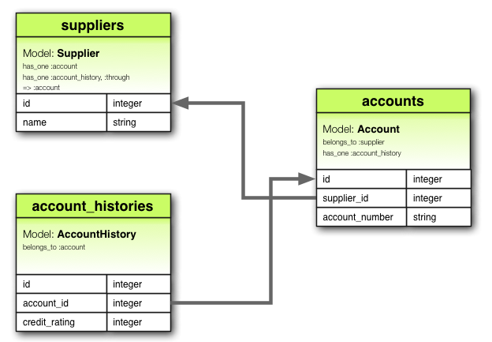
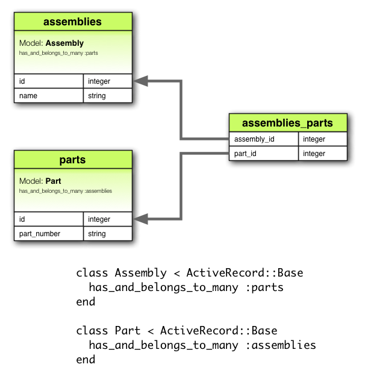

<!DOCTYPE html>
<html lang="en">
  <head>
    <meta charset="utf-8" />
    <meta name="viewport" content="width=device-width, initial-scale=1.0, maximum-scale=1.0, user-scalable=no" />

    <title>Tecnologías de Producción de Software</title>
    <link rel="shortcut icon" href="./favicon.ico" />
    <link rel="stylesheet" href="./dist/reset.css" />
    <link rel="stylesheet" href="./dist/reveal.css" />
    <link rel="stylesheet" href="./dist/theme/white.css" id="theme" />
    <link rel="stylesheet" href="./css/highlight/vs2015.css" />

    <link rel="stylesheet" href="./_assets/node_modules/reveal.js-copycode/plugin/copycode/copycode.css" />
    <link rel="stylesheet" href="./_assets/src/css/styles.css" />

  </head>
  <body>
    <div class="reveal">
      <div class="slides"><section  data-markdown><script type="text/template">
### Tecnologías de Producción de Software


# Ruby

<div class="container">
  <div class="col">
    <a href="https://www.info.unlp.edu.ar">
    
    </a>
  </div>
  <div class="col">
    <a href="https://www.unlp.edu.ar">
    
    </a>
  </div>
</div></script></section><section ><section data-markdown><script type="text/template">
# Presentación</script></section><section data-markdown><script type="text/template">## La cátedra 

| Profesor | Contacto |
| ---- | --- |
| Lic. Christian A. Rodríguez | [](mailto:car@info.unlp.edu.ar "car@info.unlp.edu.ar")<!-- .element: class="social"--> [](https://twitter.com/car_unlp "twitter")<!-- .element: class="social"--> [](https://github.com/chrodriguez "github")<!-- .element: class="social"--> | 

| Jefe de Trabajos Prácticos | Contacto |
| ---- | --- |
| Lic. Nahuel Cuesta Luengo | [](mailto:ncuesta@cespi.unlp.edu.ar "ncuesta@cespi.unlp.edu.ar")<!-- .element: class="social"--> [](https://twitter.com/ncuestal "twitter")<!-- .element: class="social"--> [](https://github.com/ncuesta "github")<!-- .element: class="social"--> |

| Ayudantes | Contacto |
| ---- | --- |
| Emilia Corrons | [](mailto:maemco4@gmail.com "maemco4@gmail.com")<!-- .element: class="social"--> | 
| Damián Candia | [](mailto:dcandia@cespi.unlp.edu.ar "dcandia@cespi.unlp.edu.ar")<!-- .element: class="social"--> |
</script></section><section data-markdown><script type="text/template">## Horarios de cursada

| Día | Hora | Aula |
| --- | --- | --- |
| Lunes (teoría) | 18 a 20 | 14 |
| Jueves (práctica) | 10 a 12 | 1 |
</script></section><section data-markdown><script type="text/template"><!-- .slide: data-auto-animate -->
## Programa

Dividimos el programa en secciones:

* **Introducción**
* **El lenguaje**
* **Gemas**
* **Active Record**
* **Rails**
* **12 Factor Apps**</script></section><section data-markdown><script type="text/template"><!-- .slide: data-auto-animate -->
## Programa

* **Introducción**
  * Se realiza un recorrido rápido acerca de la historia del
  lenguaje.
  * Con ejemplos, mostramos el potencial del lenguaje.
  * Presentamos las diferentes implementaciones de ruby y su instalación.
* **El lenguaje**
* **Gemas**
* **Active Record**
* **Rails**
* **12 Factor Apps**</script></section><section data-markdown><script type="text/template"><!-- .slide: data-auto-animate -->
## Programa

* **Introducción**
* **El lenguaje**: profundizamos sobre el lenguaje:
  * Objetos y atributos
  * Clases y variables
  * Colecciones
  * Bloques e iteradores
  * Módulos
  * Excepciones
  * Conceptos avanzados
* **Gemas**
* **Active Record**
* **Rails**
* **12 Factor Apps**</script></section><section data-markdown><script type="text/template"><!-- .slide: data-auto-animate -->
## Programa

* **Introducción**
* **El lenguaje**
* **Gemas:** a las librerias que extienden Ruby se las llaman Gemas. En esta sección
abordaremos:
  * Manejo de dependencias
  * Bundler
* **Active Record**
* **Rails**
* **12 Factor Apps**
</script></section><section data-markdown><script type="text/template"><!-- .slide: data-auto-animate -->
## Programa

* **Introducción**
* **El lenguaje**
* **Gemas**
* **Active Record:** aprendemos a conectar con bases de datos:
  * Introducción
  * CRUD
  * Migraciones
  * Validaciones
  * Asociaciones
* **Rails** 
* **12 Factor Apps**</script></section><section data-markdown><script type="text/template"><!-- .slide: data-auto-animate -->
## Programa

* **Introducción**
* **El lenguaje**
* **Gemas**
* **Active Record**
* **Rails:** el framework más utilizado por los desarrolladores Ruby. En esta sección
aprenderemos a trabajar con este framework:
  * Conceptos básicos
  * Ruteo
  * ActiveRecord
  * Unit Testing
  * MVC
* **12 Factor Apps**</script></section><section data-markdown><script type="text/template">## Modalidad de cursada

* **Aprobación de la cursada:** 
  * Una **evaluación o entrega** (estamos definiendo el mejor criterio
    de evaluación) para cada tema. En caso de no
    aprobar algún tema, se podrá reiterar la evaluación de aquellos temas no
    aprobados.
  * **Trabajo práctico final integrador**
* La nota final de la materia será un **seis aprobando la cursada**. Será
  posible mejorar la nota con una extensión del trabajo práctico integrador o
  propuesta de trabajo conjunta con el profesor.</script></section><section data-markdown><script type="text/template">## Videos años anteriores

Durante la pandemia, generamos material correspondiente a este curso. Las clases
pueden verse en los siguientes playlists de youtube:

* [Teorías 2020](https://www.youtube.com/playlist?list=PLbzlLgd17gcHfBQWOvT5V10VAPONlv6Mf)
* [Teorías 2021](https://youtube.com/playlist?list=PLbzlLgd17gcGwfnl2CZunboh1s7wzeNGq)
</script></section><section data-markdown><script type="text/template">## Bibliografía / Recursos
A medida que se presenten los temas se indicarán las fuentes apropiadas

Los fuentes de éste material pueden encontrarse en
https://github.com/ttps-ruby/ttps-ruby.github.io


<small>

Todo el material se encuentra bajo licencia **Creative Commons**

<span xmlns:dct="https://purl.org/dc/terms/" property="dct:title">TTPS - Opcion Ruby</span> por 
<span xmlns:cc="https://creativecommons.org/ns#" property="cc:attributionName">Christian A. Rodriguez</span> se encuentra bajo
una <a rel="license" href="https://creativecommons.org/licenses/by-nc-sa/3.0/deed.es">Licencia Creative Commons Atribución-NoComercial-CompartirIgual 3.0 Unported</a>.
<br />
<a rel="license" href="https://creativecommons.org/licenses/by-nc-sa/3.0/deed.es">
</a>

<div>Icons made by <a href="https://www.flaticon.com/authors/pixel-perfect" title="Pixel perfect">Pixel perfect</a> from <a href="https://www.flaticon.com/" title="Flaticon">www.flaticon.com</a></div>

</small>


</script></section></section><section  data-markdown><script type="text/template">
# Introducción

<div class="main-list">

* historia
* el lenguaje
* interpretes
</div>
</script></section><section ><section data-markdown><script type="text/template">
# Historia

<div class="main-list">

* introducción
</div></script></section><section data-markdown><script type="text/template">## [Yukihiro Matsumoto](https://en.wikipedia.org/wiki/Yukihiro_Matsumoto)


<div class="container small">
  <div class="col">

  <!-- .element: class="shade" -->

  </div>
  <div class="col">

  <!-- .element: height="80px" -->
  * En japonés: 松本行弘 (まつもとゆきひろ)
  * Matz más simple
  * Empezó el desarrollo de Ruby en 1993
  * En 1995 lanzó la primera versión
  * Aún lidera el desarrollo de Ruby
  </div>
</div>

<small>

## Su célebre frase

  Ruby is designed to make programmers **HAPPY**

</small>
</script></section><section data-markdown><script type="text/template"><!-- .slide: data-auto-animate -->
## ¿Cómo surge Ruby?

* Fusión de lenguajes
  * Smalltalk
  * Perl
  * LISP
* Hasta el 2001 conocido sólo en Japón
  * El libro [Programming Ruby](https://pragprog.com/book/ruby/programming-ruby) fue el 
    impulsor del lenguaje fuera de Japón
  * También conocido como PickAxe
  * La primera versión puede [leerse en línea](https://ruby-doc.org/docs/ProgrammingRuby/)
</script></section><section data-markdown><script type="text/template"><!-- .slide: data-auto-animate -->
## ¿Cómo surge Ruby?

<!-- .element: class="shade" height="500px" -->
</script></section><section data-markdown><script type="text/template">## [David Heinemeier Hansson](https://en.wikipedia.org/wiki/David_Heinemeier_Hansson)

<div class="container small">
  <div class="col">

<!-- .element: class="shade"-->

  </div>
  <div class="col">

<!-- .element: height="80px" -->

  * Creador de [Rails](https://rubyonrails.org/): _framework open source para desarrollo de aplicaciones web_
  * Su primer versión liberada (1.0) fue en 2005

  </div>
</div>


</script></section></section><section ><section data-markdown><script type="text/template">
# El lenguaje

<div class="main-list">

* introducción
</div>
</script></section><section data-markdown><script type="text/template"># El lenguaje

* Dinámico
* Sintaxis concisa y expresiva 
* Orientado a objetos
* Capacidades de metaprogramación
* Características funcionales
</script></section><section data-markdown><script type="text/template">## Sintaxis y convenciones

Nombres válidos y convenciones:

```ruby
  NombreDeClaseOModulo
  CONSTANTE
  @nombre_de_atributo
  @@atributo_de_clase
  $variable_global
  nombre_de_metodo
  metodo_peligroso!
  metodo_que_pregunta?
```
</script></section><section data-markdown><script type="text/template">## Objetos

Todos los valores son **objetos**

```ruby
"Aprendiendo ruby".length
"Aprendiendo ruby".each_char.sort.join
1 + 2
1.send :+, 2
```
## Arreglos

```ruby
["Go", "Ruby", "Java", "Python", "PHP", "Javascript"].sort
([1,2,3] + [4,5,6]).last
```
</script></section><section data-markdown><script type="text/template">

## Números

```ruby
-100.abs
1_123_456 * 1_000_000
1.5 * 3
0b1000_1000   # Binario     =>  136
010           # Octal       =>    8
0x10          # Hexadecimal =>   16
```

<div class="container">
  <div class="col">

### nil

```ruby
a = Array.new
a[10].nil?
nil.nil?
```

  </div>
  <div class="col">

### object id

```ruby
1.object_id
nil.object_id
```
  </div>
</div></script></section><section data-markdown><script type="text/template">
## Strings

<div class="container">
  <div class="col">

### Literales

```ruby
'sin interpolar'
"Interpolando: #{'Ja'*3}!"

# Notación alternativa
%q/Hola/
%q!Chau!
%Q{Interpolando: #{3+3}}
```
  </div>
  <div class="col">

### Here document

```ruby
un_string = <<-EOS
  Este es un texto
  de mas de una linea
  que termina aqui.
  Se puede observar que
  espacios antes de cada
  linea.
EOS

un_string.upcase
```
  </div>
</div>
</script></section><section data-markdown><script type="text/template">## Símbolos

* Son como variables prefijados con **:** (dos puntos)
  * Ejemplos: `:action`, `:line_items`, `:+`
* No es necesario declararlos 
* Se garantiza que son únicos
  * No es necesario asignarles ningún valor

```ruby

:uno.object_id  # siempre devolverá lo mismo
"uno".object_id # siempre devolverá diferente

```</script></section><section data-markdown><script type="text/template">## Colecciones

<div class="container small">
  <div class="col">

### Arreglos

```ruby

['Hola', 'Chau']

# sin interpolar
%w(Hola Chau #{2+2})

# interpolando
%W(Hola Chau #{2+2})

[1,2,3,4]
```

  </div>
  <div class="col">


### Hashes

```ruby
# Versión 1.8
{
  :nombre   => 'Christian',
  :apellido   => 'Rodriguez'
}
# Versión > 1.8
{
  nombre:   'Christian',
  apellido:   'Rodriguez'
}
```

  </div>
</div>
</script></section><section data-markdown><script type="text/template">## Expresiones regulares

```ruby
/^[a-zA-Z]+$/
"Do you like cats?" =~ /like/
"192.168.0.10" =~ /^\d{1,3}\.\d{1,3}\.\d{1,3}\.\d{1,3}$/
```


> Explicación en [Pickaxe](https://ruby-doc.com/docs/ProgrammingRuby/html/intro.html#S5).
> Con [Rubular](https://rubular.com/) es posible probarlas.</script></section><section data-markdown><script type="text/template"><div class="container small">
  <div class="col">

## Rangos

```ruby

0..1
0..10
"a".."z"
"a"..."z"

# Pueden convertirse en arreglos
("a"..."z").to_a

# Rangos como intervalos
(1..10) === 5     # => true
(1..10) === 15    # => false
(1..10) === 3.1   # => true

```

  </div>
  <div class="col">

## Expresiones

```
a = 3.14 # => 3.14

# Veamos el case
estado = nil
face =  case estado
        when "Feliz"  then ":)"
        when "Triste" then ":("
        else               ":|"
end

```


> En Ruby toda expresión retorna un valor 

  </div>
</div>
</script></section><section data-markdown><script type="text/template">
<div class="container small">
  <div class="col">

## Lambdas

```ruby
uno = lambda { |n| n * 2 }
dos = ->(n, m){ n * 2 + m }
tres  = ->(n, m=0){ n * 2 + m}

# Entonces

uno.call 2      # => 4
dos.call 2,3    # => 7
tres.call 2     # => 4
```
  </div>
  <div class="col">

## Bloques


```ruby
3.times do |i|
  puts i
end

3.times { |i| puts i }
```

> Rara vez usaremos un for / while

  </div>
</div></script></section><section data-markdown><script type="text/template"><!-- .slide: data-auto-animate -->
## Ejemplos de bloques y colecciones


<pre data-id="code-animation"><code class="ruby hljs" data-trim data-line-numbers>
# Selección de números pares
(1..10).select { |n| n.even? }

# Procesar cada elemento de una colección
(1..10).map { |n| n*2 }

# Calcular con los elementos de la colección:
(1..100).reduce { |sum,n| sum + n }
</code></pre>


</script></section><section data-markdown><script type="text/template"><!-- .slide: data-auto-animate -->
## Ejemplos de bloques y colecciones

<pre data-id="code-animation"><code class="ruby hljs" data-trim data-line-numbers="3,4,8,9,13,14">
# Selección de números pares
(1..10).select { |n| n.even? }
# o lo que es igual:
(1..10).select(& :even?)

# Procesar cada elemento de una colección
(1..10).map { |n| n*2 }
# o lo que es igual:
(1..10).collect { |n| n*2 }

# Calcular con los elementos de la colección:
(1..100).reduce { |sum,n| sum + n }
# o lo que es igual:
(1..100).reduce(:+)
</code></pre>
</script></section><section data-markdown><script type="text/template">## Bloques y archivos

```ruby

File.open('/etc/passwd').each do |line|
  puts line if line =~ /root/
end
```


</script></section></section><section ><section data-markdown><script type="text/template">
# Intérpretes

<div class="main-list">

* introducción
</div>
</script></section><section data-markdown><script type="text/template">
Ruby como lenguaje, tiene varias implementaciones. La implementación de
referencia es conocida como **MRI: _Matz’s Ruby Interpreter_** o **CRuby**
(porque está desarrollada en C), pero existen otras implementaciones.
</script></section><section data-markdown><script type="text/template">
## MRI

* **Homepage:** https://www.ruby-lang.org/
* Matz' Ruby Implementation
* También llamada CRuby
* Es la implementación de referencia del lenguaje
* Versiones
  * **1.8.x**
  * **1.9.x**
  * **2.x**
  * **3.x** _Ruby 3 will be 3 times faster_<!-- .element: class="fragment" -->
</script></section><section data-markdown><script type="text/template">## JRuby


* **Homepage:** https://www.jruby.org/
* Ruby en la **JVM de Java**
* Es la alternativa más madura a MRI en términos de compatibilidad con MRI
* Ventajas:
  * Concurrencia real
  * Interoperabilidad con librerías Java


</script></section><section data-markdown><script type="text/template">## Rubinius

* **Homepage:** https://github.com/rubinius/rubinius
* Comenzó como un experimento que comenzó como una implementación de Ruby, pero
  en realidad apunta a extender las limitaciones de Ruby.
* Su diseño se enfoca en la concurrencia.
* La VM fue escrita en C++
</script></section><section data-markdown><script type="text/template">## TruffleRuby

* **Homepage:** https://github.com/oracle/truffleruby
* Es una implementación de alta performance de Ruby creada por Oracle.
* Permite correr código en paralelo y el startup de aplicaciones ruby es mucho
  menor.
* Basado en [GraalVM](http://graalvm.org/). 

</script></section><section data-markdown><script type="text/template">## ¿Cómo trabajar con ruby?

* Mayormente la gestión del ambiente de trabajo con ruby se realiza con alguna
  de las siguientes herramientas:
  * [**RVM:** Ruby Version Manager](https://rvm.io/)
  * [**rbenv:** Ruby environment](https://github.com/rbenv/rbenv)
  * [**asdf**](https://asdf-vm.com/) con el plugin [**asdf
    ruby**](https://github.com/asdf-vm/asdf-ruby)
  * _Ruby instalado como paquete del propio sistema no es recomendado._

> El uso, instalación y manejo de los entornos serán abordados en el espacio de
> las prácticas


</script></section></section><section  data-markdown><script type="text/template">
# Ruby

<div class="main-list">

* objetos y atributos
* clases y variables
* colecciones
* bloques e iteradores
* módulos
* excepciones
* conceptos avanzados
</div>
</script></section><section ><section data-markdown><script type="text/template">
# Objetos y atributos

<div class="main-list">

* ruby

</div>
</script></section><section data-markdown><script type="text/template">## Aprendemos con un ejemplo

* Sistema que realiza control de stock de libros.
* Utilizando un lector de código de barra se lee de cada libro información que
  luego se descargará como CSV
* Ejemplo del CSV:

```csv
"Date","ISBN","Amount"
"2008-04-12","978-1-9343561-0-4",39.45
"2008-04-13","978-1-9343561-6-6",45.67
"2008-04-14","978-1-9343560-7-4",36.95
```
</script></section><section data-markdown><script type="text/template">## ¿Qué debe hacer el sistema?

* Leer varios archivos CSV y determinar cuántos ejemplares de cada
  título disponemos
* Determinar además el monto total en libros que tenemos
</script></section><section data-markdown><script type="text/template">## Creamos la clase BookInStock


```ruby
class BookInStock
end
```
> Recordamos que los nombres de las clases deben comenzar con mayúsculas, los
métodos con minúscula

<div class="fragment" >

### Lo probamos

```ruby
a_book = BookInStock.new
another_book = BookInStock.new
```
</div>
</script></section><section data-markdown><script type="text/template">## Observaciones

* Se crean dos objetos diferentes de la clase `BookInStock`. 
* Podríamos decir en esta primer instancia que son el mismo libro, o iguales porque **nada los
distingue**.
* Lo solucionamos obligando que la inicialización indique aquellos datos que distinga al
libro.
</script></section><section data-markdown><script type="text/template">
## Variables de instancia

```ruby
class BookInStock
  def initialize(isbn, price)
    @isbn = isbn
    @price = Float(price)
  end
end
```

* El método `initialize` es especial en Ruby 
* Cuando se invoca el método `new`, Ruby aloca memoria para alojar un objeto no
  inicializado y luego invoca al método `initialize` **pasándole cada parámetro
  que fue enviado a `new`**.
* Entonces `initialize` nos permite configurar el estado inicial de nuestros objetos.
</script></section><section data-markdown><script type="text/template">## En el método initialize

* Se utilizan variables de instancia: comienzan con **@**.
* Las variables `@isbn` e `isbn` son diferentes.
* Se realiza una pequeña validación implícita:
  * El método [`Float`](http://www.ruby-doc.org/core-2.0.0/Kernel.html#method-i-Float)
    toma un argumento y lo convierte a `float`, terminando el programa si falla
    la conversión</script></section><section data-markdown><script type="text/template">
## Usamos los nuevos objetos

```ruby
b1 = BookInStock.new("isbn1", 3)
p b1
b2 = BookInStock.new("isbn2", 3.14)
p b2
b3 = BookInStock.new("isbn3", "5.67")
p b3
```

> Usamos el método `p` porque imprime el estado interno de los objetos.
> Si se utilizara `puts` entonces se invocaría `to_s` e imprimiría:
> `#<nombre_de_clase:id_objeto_en_hex>`
</script></section><section data-markdown><script type="text/template">
## Implementamos to_s

```ruby
class BookInStock
  def to_s
    "ISBN: #{@isbn}, price: #{@price}"
  end
end
```

> Probar nuevamente `puts b3`</script></section><section data-markdown><script type="text/template">## Objetos y sus atributos

* Un objeto como el mostrado anteriormente no permite que nadie acceda a sus
  variables.
* Si bien es algo positivo encapsular, si no permitimos acceder a los datos que
  mantienen el estado del objeto, el mismo se vuelve inútil.
* A las *ventanas* de acceso a los objetos las denominaremos **atributos**.
* Modificaremos nuestra clase de `BookInStock` con el fin de agregar atributos
  para `isbn` y `price` así podemos contabilizarlos.
</script></section><section data-markdown><script type="text/template">## Getters

```ruby
class BookInStock
  def isbn
    @isbn 
  end

  def price
    @price
  end
end
```
</script></section><section data-markdown><script type="text/template">## Atributos de lectura

A los atributos anteriores se los denomina **accesor** porque mapean
directamente con las variables de instancia. Ruby provee un shortcut: **`attr_reader`**.

```ruby 
class BookInStock
  attr_reader :isbn, :price
  def initialize(isbn, price)
    @isbn = isbn
    @price = Float(price)
  end
end
```

> * Notar que se utilizan **símbolos**.
> * `attr_reader` **no define variables de instancia**, sólo los métodos de acceso.
</script></section><section data-markdown><script type="text/template">## Atributos de escritura

No sólo leemos atributos: a veces necesitamos modificar un valor. Ésto es
posible definiendo un método terminado con **el signo igual**.

```ruby
class BookInStock
  attr_reader :isbn, :price

  def initialize(isbn, price)
    @isbn = isbn
    @price = Float(price)
  end

  def price=(new_price)
    @price = new_price
  end
end
```
</script></section><section data-markdown><script type="text/template">## Atributos de escritura

```ruby
book = BookInStock.new("isbn1", 33.80)
book.price = book.price * 0.75 # discount price
puts "New price = #{book.price}"
```

<div class="container">

<div class="col small">

Podemos usar entonces:
* **`attr_writer`:** acceso W.
* **`attr_accessor`:** acceso RW.

</div>
<div class="col">


```ruby
class BookInStock

  attr_reader :isbn
  attr_accessor :price

  def initialize(isbn, price)
    @isbn = isbn
    @price = Float(price)
  end
end
```

</div>
</div></script></section><section data-markdown><script type="text/template">## Atributos virtuales

Agregamos el precio en centavos

<pre><code class="ruby hljs" data-trim data-line-numbers="9-16">
class BookInStock
  attr_reader :isbn
  attr_accessor :price
  def initialize(isbn, price)
    @isbn = isbn
    @price = Float(price)
  end

  def price_in_cents
    Integer(price*100 + 0.5)
  end

  def price_in_cents=(cents)
    @price = cents / 100.0
  end
end
</pre></code>
</script></section><section data-markdown><script type="text/template">## El lector de CSV
Ya tenemos el objeto que representa un libro. Resta implementar:
* Leer varios archivos CSV
* Totalizar ejemplares iguales
* Totalizar el precio de los libros en stock
</script></section><section data-markdown><script type="text/template">## CsvReader

Pensamos la estructura de `CsvReader`
```ruby
class CsvReader
  def initialize
  end

  def read_in_csv_data(csv_file_name)
  end

  def total_value_in_stock
  end

  def number_of_each_isbn
  end
end
```</script></section><section data-markdown><script type="text/template">## Uso de CsvReader

```ruby
reader = CsvReader.new
reader.read_in_csv_data("file1.csv")
reader.read_in_csv_data("file2.csv")
# Otros csv
puts "Total value in stock =  #{reader.total_value_in_stock}"
```

* Notamos que `CsvReader` debe ir acumulando lo que va leyendo de cada csv.
* Para ello mantendremos un arreglo de valores como variable de instancia.
* Para leer un CSV, Ruby provee de una librería que simplificará el trabajo.
</script></section><section data-markdown><script type="text/template">
## CsvReader

```ruby
require 'csv'

class CsvReader

  def initialize
    @books_in_stock = []
  end

  def read_in_csv_data(csv_file_name)
    CSV.foreach(csv_file_name, headers: true) do |row|
      @books_in_stock << 
        BookInStock.new(row["ISBN"], row["Amount"])
    end
  end
end
```
> Utilizamos la librería `csv` que nos permite acceder a los campos de cada
> columna por su nombre.
</script></section><section data-markdown><script type="text/template">## Cálculo  del precio total

```ruby
class CsvReader

  def total_value_in_stock
    sum = 0.0
    @books_in_stock.each do |book| 
      sum += book.price
    end
    sum
  end

end
```

> Ya veremos una implementación **más rubista** que la utilizada en esta
> instancia.
</script></section><section data-markdown><script type="text/template">
## Organizando el código

* Dividimos el código en tres archivos
  * **`lib/book_in_stock.rb`:** la clase `BookInStock`
  * **`lib/csv_reader.rb`:** el código de `CsvReader`
  * **`stock_stats.rb`:** el programa principal
* Aparecerán dependencias entre ellos
  * Para cargar dependencias externas se utiliza: **`require`** y **`require_relative`**
</script></section><section data-markdown><script type="text/template">
### stock_stats.rb

```ruby
require_relative 'csv_reader'

reader = CsvReader.new
ARGV.each do |csv_file_name|
  STDERR.puts "Processing #{csv_file_name}"
  reader.read_in_csv_data(csv_file_name)
end

puts "Total value = #{reader.total_value_in_stock}"
```

[Descargar el
ejemplo](https://github.com/ttps-ruby/ttps-ruby.github.io/tree/master/ejemplos/stock-stats)


</script></section></section><section ><section data-markdown><script type="text/template">
# Clases y variables

<div class="main-list">

* ruby

</div>
</script></section><section data-markdown><script type="text/template">
# Clases
</script></section><section data-markdown><script type="text/template">## Control de acceso

* Permitir demasiado acceso en las clases incrementará el **acoplamiento** de
  la aplicación: _los usuarios de una clase que se expone demasiado podrían confiar en
    detalles de implementación en vez de su interfaz lógica._
* Ruby provee control de acceso a los métodos
* Una regla importante es: **_Nunca exponer métodos que puedan dejar un objeto
  en estado inválido_**.
</script></section><section data-markdown><script type="text/template">
## Niveles de protección
* **Públicos:** los métodos públicos pueden invocarse por cualquiera. Los
  métodos son públicos por defecto excepto `initialize` que es privado.
* **Protegidos:** pueden invocarse por objetos de la clase que lo define y
  subclases.
* **Privados:** no pueden ser invocados con un receptor explícito:
  _el receptor es siempre el objeto actual, `self`_. Esto
  significa que tampoco puede invocar el método privado de otra instancia de la
  misma clase.
</script></section><section data-markdown><script type="text/template">## Aplicando accesos

```ruby
class MyClass
  def method  # default is public
  end

  protected   # subsequent methods will be 'protected'
  def method2
  end

  private     # subsequent methods will be 'private'
  def method3
  end

  public      # subsequent methods will be 'public'
  def method4
  end
end
```</script></section><section data-markdown><script type="text/template">## Alternativamente

```ruby
class MyClass
  def method1; end
  def method2; end
  def method3; end
  def method4; end

  public :method1, :method4
  protected :method2
  private :method3
end
```
</script></section><section data-markdown><script type="text/template">
# Variables
</script></section><section data-markdown><script type="text/template">## Variables
* Hemos usado variables en varias oportunidades.
* Se usan para no perder valores y poder referenciarlos nuevamente.
* Cada variable es una **referencia** a un objeto.

> *Is a variable an object?* ***In Ruby, the answer is no.*** *A variable is simply a
> reference to an object. Objects float around in a big pool somewhere (the heap, most of the
> time) and are pointed to by variables.*
</script></section><section data-markdown><script type="text/template">
## Son referencias

Analicemos el siguiente ejemplo

```ruby
person1 = "Tim"
person2 = person1
person1[0] = 'J'
puts "person1 is #{person1}"
puts "person2 is #{person2}"
```

### Para evitarlo: `dup`

```ruby
person1 = "Tim"
person2 = person1.dup
person1[0] = 'J'
puts "person1 is #{person1}"
puts "person2 is #{person2}"
```</script></section><section data-markdown><script type="text/template">
## Freezando un objeto

Es posible freezar objetos

```ruby
person1 = "Tim"
person2 = person1
person1.freeze
person2[0] = 'J'
```


</script></section></section><section ><section data-markdown><script type="text/template">
# Colecciones

<div class="main-list">

* ruby

</div>
</script></section><section data-markdown><script type="text/template">
## Introducción
* Las colecciones representan elementos fundamentales de cualquier programa.
* Ruby provee dos clases que representan colecciones:
  * `array`
  * `hash` _o  arreglo asociativo_
* El correcto uso de estas colecciones es fundamental en la programación Ruby.
* Los bloques, combinados con colecciones se convierten en construcciones muy
  poderosas para la iteración.
</script></section><section data-markdown><script type="text/template">
## Array

<div class="container">
  <div class="col">

* La clase `Array` mantiene una colección de referencias a objetos.
* Cada referencia a objeto ocupa una posición en el arreglo, identificada por un
  índice entero no negativo.

  </div>
  <div class="col">

```ruby
a = [ 3.14159, "pie", 99 ]
a.class
a.length
a[0]
a[1]
a[2]
a[3]

b = Array.new
b.class
b.length
b[0] = "second"
b[1] = "array"
```
  </div>
</div>
</script></section><section data-markdown><script type="text/template">
## Arrays y `[]`

* Los elementos de un arreglo se acceden con el operador `[]`.
* Pero `[]` es un método (de instancia en la clase `Array`) y por tanto puede
  implementarse por cualquier subclase.
* El primer índice de un arreglo es el cero.
* Un arreglo accedido en un índice positivo retorna el objeto referenciado en
  esa posición.
  * Si no hay objeto, retorna `nil`.
* Un arreglo accedido en un índice negativo, retorna el objeto contando desde el
  final.
</script></section><section data-markdown><script type="text/template">## Uso de índices

<div class="container">
  <div class="col">

### Negativos

```ruby
a = [ 1, 7, 9]
a[-1]
a[-2]
a[-99]


```

  </div>
  <div class="col">

### Pares
```ruby
a = [ 1, 3, 5, 7, 9 ]
a[1, 3]
a[3, 1]
a[-3, 2]


```

> El significado es `[desde,cantidad]`

  </div>
  <div class="col">

### Rangos

```ruby
a = [ 1, 3, 5, 7, 9]
a[1..3]
a[1...3]
a[3..3]
a[-3..-1]
```
> Significa **desde** y **hasta**.
> Si se utiliza `..` se incluye el fin de rango, con
> `...` se **excluye** el extremo final.
  </div>
  </div>
</script></section><section data-markdown><script type="text/template">## El método `[]=`


Setea elementos de un array.

```ruby
a = [ 1, 3, 5, 7, 9 ]
a[1] = 'bat'
a[-3] = 'cat'
a[3] = [ 9, 8 ]
a[6] = 99
```

> Si se utiliza un único índice, reemplaza su valor por lo que esté
> a la derecha de la asignación: _cualquier gap que haya quedado luego de `[]=`
> se completa con nil._
</script></section><section data-markdown><script type="text/template">## El método `[]=`
* Utilizando dos valores o un rango, el comportamiento depende de lo que 
  esté a la derecha de la asignación:
  * Si la cantidad  a reemplazar es cero, entonces **inserta el valor**
    en la posición inicial: **_no se eliminan elementos_**.
  * Si el valor a la **derecha es un arreglo**, sus elementos se utilizan en el 
    reemplazo: _el tamaño del arreglo es actualizado si la cantidad de
    elementos a la derecha difiere de la cantidad a reemplazar._
</script></section><section data-markdown><script type="text/template">## Mejor un ejemplo


```ruby
a = [ 1, 3, 5, 7, 9 ]
a[2, 2] = 'cat'
a[2, 0] = 'dog'
a[1, 1] = [ 9, 8, 7 ]
a[0..3] = []
a[5..6] = 99, 98
```
</script></section><section data-markdown><script type="text/template">## push y pop


```ruby
stack = []
stack.push "red"
stack.push "green"
stack.push "blue"

puts stack.pop
puts stack.pop
puts stack.pop
```
</script></section><section data-markdown><script type="text/template">## shift y unshift

```ruby
stack = []
(stack.unshift 1).unshift 2
stack.unshift 3

puts stack.shift
puts stack.shift
puts stack.shift
```
</script></section><section data-markdown><script type="text/template">## first y last

```ruby
array = [ 1, 2, 3, 4, 5, 6, 7 ]
p array.first(4)
p array.last(4)
```
</script></section><section data-markdown><script type="text/template">## Hashes

* Los arreglos se indexan con enteros, los hashes con objetos: _Símbolos, strings, expresiones regulares, etc_.
* Cuando se almacena un valor en un hash, utilizamos:
  * El índice, generalmente llamado *key*
  * El dato a almacenar en dicho índice, generalmente llamado *valor*
* El acceso a los valores referenciados por un hash se realiza por medio de los
  *keys*.
</script></section><section data-markdown><script type="text/template">
### Ejemplo

```ruby
h = { 'dog' => 'canine', 'cat' => 'feline' }
h.length # => 2
h['dog'] # => "canine"
h['cow'] = 'bovine'
h[12] = 'dodecine'
h['cat'] = 99
```
</script></section><section data-markdown><script type="text/template">### Cambio de notación

```ruby
# En ruby >= 1.9
h = { dog: 'canine', cat: 'feline' }

# En ruby < 1.9
h = { :dog => 'canine', :cat => 'feline' }
```</script></section><section data-markdown><script type="text/template">
### Un programa usando colecciones


Calcular el número de veces que aparece una palabra en un texto

> El problema se divide en dos partes:
> * Separar el texto en palabras: *suena como un array*
> * Luego contar cada palabra diferente: *suena como hash*
</script></section><section data-markdown><script type="text/template">
### El método que obtiene las palabras

Usando expresiones regulares y el método `scan` todo parece muy simple:

```ruby
def words_from_string(string)
  string.downcase.scan(/[\w']+/)
end
```

> Analizar otros ejeplos de scan. Por ejemplo probar:
> 
> `"0123456789".scan /.{2}/`</script></section><section data-markdown><script type="text/template">### El método que cuenta las palabras

Con un hash indexaremos para cada palabra, la cantidad de ocurrencias.

```ruby
if counts.has_key?(next_word)
  counts[next_word] += 1
else
  counts[next_word] = 1
end
```
</script></section><section data-markdown><script type="text/template">
## Refactorizamos

```ruby
def count_frequency(word_list)
  counts = Hash.new(0)
  for word in word_list
    counts[word] += 1
  end
  counts
end
```

> `Hash.new` puede recibir como parámetro el valor usado para incializar cada
> valor del Hash.  [Ver ejemplo](https://github.com/ttps-ruby/ttps-ruby.github.io/tree/master/ejemplos/words-frequency).
> Es importante destacar que el ejemplo incluye tests para analizar cómo
> desarrollar utilzando TDD.


</script></section></section><section ><section data-markdown><script type="text/template">
# Bloques e iteradores

<div class="main-list">

* ruby

</div>
</script></section><section data-markdown><script type="text/template">
## Bloques
* Un bloque es código encerrado entre llaves o las palabras claves `do` y `end`.
* Ambas formas son idénticas, salvo por la precedencia.
  * Cuando el código del bloque entra en una línea usar {}.
  * Cuando tiene más de una línea usar `do` / `end`.
* Los bloques pueden verse como métodos anónimos.
</script></section><section data-markdown><script type="text/template">
## Bloques
* Pueden recibir parámetros, que se explicitan entre barras verticales `|`.
* El código de un bloque no se ejecuta cuando se define, sino que se almacenará
  para ser ejecutado más adelante.
* En ruby, los bloques sólo podrán usarse después de la *invocación* de algún
  método:
  * Si el método recibe parámetros, entonces aparecerá luego de ellos.
  * Podría verse incluso como un parámetro extra que es pasado al método.
</script></section><section data-markdown><script type="text/template">
## Ejemplo

Suma de los cuadrados de los números en un arreglo

<div class="container">
<div class="col">

```ruby
sum = 0
[1, 2, 3, 4].each do |value|
  square = value * value
  sum += square
end
puts sum
```

</div>
<div class="col small">

* El bloque se invoca para cada elemento en el arreglo
* El elemento del arreglo es pasado al bloque en la variable `value`
* La variable `sum` declarada fuera del bloque es actualizada dentro del bloque
</div>
</div>
</script></section><section data-markdown><script type="text/template">## Bloques

* **Regla importante:** *si existe una variable en el bloque con el mismo
  nombre que una variable dentro del alcance pero creada fuera del bloque, ambas serán la
  misma variable. En el ejemplo hay sólo una variable `sum`*
* Veremos que el comportamiento mencionado podremos cambiarlo
* Si una variable aparece sólo en el bloque, entonces será local al mismo (como
`square`)
</script></section><section data-markdown><script type="text/template">## Un caso inesperado

```ruby
# assume Shape defined elsewhere
square = Shape.new(sides: 4) 
#
# .. lots of code
#
sum = 0
[1, 2, 3, 4].each do |value|
  square = value * value
  sum += square
end

puts sum
square.draw # BOOM!
```
</script></section><section data-markdown><script type="text/template">## Mas casos

No sucede lo mismo con los argumentos al bloque

```ruby
value = "some shape"
[ 1, 2 ].each {|value| puts value }
puts value
```

Podemos solucionar el problema de `square`

```ruby
square = "some shape"
sum = 0
[1, 2, 3, 4].each do |value; square|
  square = value * value # different variable
  sum += square
end
puts sum
puts square
```
</script></section><section data-markdown><script type="text/template">## La magia de los bloques

<div class="small">

* Mencionamos que los bloques se utilizan de forma adyacente a la llamada a un
  método y que no se ejecutan en el momento en que aparecen en el código.
* Para lograr este comportamiento, dentro de un método cualquiera, podremos
  invocar un bloque:
  * Los bloques se invocarán como si fueran métodos.
  * Para invocar un bloque se utiliza la sentencia `yield`.
  * Al invocar `yield` ruby invocará al código del bloque .
  * Cuando el bloque finaliza, ruby devuelve el código inmediatamente al
    finalizar el llamado a `yield`.
</div></script></section><section data-markdown><script type="text/template">## Ejemplo de un bloque

```ruby

def three_times
  yield
  yield
  yield
end

three_times { puts "Hola" }
```
</script></section><section data-markdown><script type="text/template">
## Parámetros a un bloque

* Cuando utilizamos `yield` podemos enviarle un parámetro
  * El parámetro enviado se mapea con el definido en el bloque entre las barras
    verticales.
* Un bloque puede retornar un valor y ser usado en el método.
</script></section><section data-markdown><script type="text/template">## Ejemplo de envío de parámetros

```ruby

def fib_up_to(max)
  i1, i2 = 1, 1
  while i1 <= max
    yield i1
    i1, i2 = i2, i1+i2
  end
end

fib_up_to(1000) {|f| print f, " " }

```
</script></section><section data-markdown><script type="text/template">## Uso del valor retornado

```ruby

class Array
  def my_find
    for i in 0...size
      value = self[i]
      return value if yield(value)
    end
    return nil
  end
end

(1..200).to_a.my_find {|x| x%5 == 0}

(1..200).to_a.my_find {|x| x == 0}

```
</script></section><section data-markdown><script type="text/template">## Los iteradores
* Las clases que implementan colecciones, como `Array` *hacen lo que hacen
  mejor:*
  * Acceder a los elementos que contienen.
* El comportamiento de qué hacer con cada elemento lo delegan a la aplicación:
  * Permitiendo que nos concentremos sólo en un requerimiento particular.
  * En los casos anteriores (`find`), sería encontrar un elemento para el cual
    el criterio sea verdadero.
</script></section><section data-markdown><script type="text/template">## each y collect

* El iterador `each` es el más simple.
  * Solo invoca `yield` para cada elemento.
* El iterador `collect` también conocido como `map`.
  * Invoca `yield` para cada elemento. El resultado lo guarda en un nuevo 
  arreglo que es **retornado**.

```ruby
[ 1, 3, 5, 7, 9 ].each {|i| puts i }

['k','h','m','t','w'].collect {|x| x.succ }
```
</script></section><section data-markdown><script type="text/template">## Otros usos de iteradores 

* Los iteradores no sólo se usan con array y hash.
* Su lógica es muy utilizada en clases de entrada / salida para retornar
  líneas sucesivas o bytes.

```ruby
f = File.open("testfile")
f.each { |line| puts "The line is: #{line}"}
f.close
```


```ruby
f = File.open("testfile")
f.each_with_index do |line, index| 
  puts "Line #{index} is: #{line}" 
end
f.close
```
</script></section><section data-markdown><script type="text/template">## inject
* Este iterador tiene un nombre *raro*.
* Permite acumular un valor a lo largo de los miembros de una colección.
* Recibe un parámetro que es el valor inicial para comenzar a acumular.
  * Si no se especifica **toma el primer elemento de la colección**.

```ruby
[1,3,5,7].inject(0) {|sum, element| sum+element}
[1,3,5,7].inject    {|sum, element| sum+element}
[1,3,5,7].inject(1) {|prod, element| prod*element}
[1,3,5,7].inject    {|prod, element| prod*element}
```
</script></section><section data-markdown><script type="text/template">## inject

Un uso más críptico de `inject`:

```ruby
[1,3,5,7].inject(:+)
[1,3,5,7].inject 100, :+
[1,3,5,7].inject(:*)
```
</script></section><section data-markdown><script type="text/template">## Problema de iteradores
* Los iteradores son muy cómodos pero:
  * Son parte de la colección y no una clase a parte.
  * En otros lenguajes (como Java), las colecciones no implementan sus
    iteradores, sino que son clases separadas (como por ejemplo la interfaz 
    Iterator de Java).
  * Es complicado iterar dos colecciones simultáneamente.
</script></section><section data-markdown><script type="text/template">## Enumerators

* La solución: clase `Enumerator`.
* Se obtiene de una colección con el método `to_enum` o `enum_for`.

```ruby
a = [ 1, 3, "cat" ]
h = { dog: "canine", fox: "lupine" }
# Create Enumerators
enum_a = a.to_enum
enum_h = h.to_enum
enum_a.next   # => 1
enum_h.next   # => [ :dog, "canine" ]
enum_a.next   # => 3
enum_h.next   # => [ :fox, "lupine" ]
```</script></section><section data-markdown><script type="text/template">## Enumerators e iteradores

Si un iterador se utiliza sin bloque, entonces retorna un Enumerator

```ruby
a = [1,2,3].each
a.next
```
</script></section><section data-markdown><script type="text/template">## El método loop
<div class="small">

* Ejecuta el código que se encuentra dentro del bloque.
* Se puede salir con break cuando se cumple una condición.
* Si hay iteradores, `loop` terminará cuando el Enumerator se quede sin valores.

</div>

<div class="container">
<div class="col">

```ruby


loop { puts "Hola" }


```
</div>
<div class="col">

```ruby
i=0
loop do
  puts i += 1
  break if i >= 10
end
```
</div>
</div>

```ruby
short_enum = [1, 2, 3].to_enum
long_enum = ('a'..'z').to_enum
loop { puts "#{short_enum.next} - #{long_enum.next}" }
```
</script></section><section data-markdown><script type="text/template">## Enumerator como objeto

Sabemos que es posible usar `each_with_index` en `Array`

```ruby
result = []
[ 'a', 'b', 'c' ].each_with_index do |item, index| 
  result << [item, index] 
end
```

<div class="fragment">

¿Y si queremos hacer lo mismo con un `String`?
</div>

<div class="fragment small">

* No existe `each_with_index` en `String`.
* Pero sí existe `each_char` que es como `each` de `Array` pero sobre cada
  caracter del string.
  * Si no enviamos un bloque, retornará un `Enumerator`.
* La interfaz `Enumerable` define el método `each_with_index`.
</div>
</script></section><section data-markdown><script type="text/template">## El código con String
```ruby
result = []
"cat".each_char.each_with_index do |item, index| 
    result << [item, index] 
end
# Aun más simple:
result = []
"cat".each_char.with_index do |item, index| 
    result << [item, index] 
end
```
</script></section><section data-markdown><script type="text/template">## Enumerator como generadores
<div class="small">

* Podemos crear objetos enumerator explícitamente en vez de hacerlo a partir de
  una colección.
* Para ello es necesario utilizar un bloque en la creación:
  * El código del bloque se usará por el objeto Enumerator cada vez que el
    programa principal le solicite un nuevo valor.
  * Este bloque no se ejecutará como otros bloques dado que su ejecución
    se disparará cada vez que se solicita el siguiente valor.
  * La ejecución del bloque se pausa y vuelve al programa principal cuando se
    encuentra `yield`.
  * Cuando se solicita el siguiente valor, el código del bloque continúa a
    partir de la línea siguiente al `yield`.
</div>
</script></section><section data-markdown><script type="text/template">## Enumerator como generadores
Generamos **secuencias infinitas**:


```ruby
fibonacci = Enumerator.new do |caller|
  i1, i2 = 1, 1
  loop do
    caller.yield i1
    i1, i2 = i2, i1+i2
  end
end

6.times { puts fibonacci.next }
```

<div class="small">

Como `Enumerator` es `Enumerable` sería posible:
</div>

```ruby
fibonacci.first(1000).last
```
</script></section><section data-markdown><script type="text/template">## ¡Hay que tener cuidado!

<div class="small">

* Cuidado con los enumerators que generan listas infinitas.
* Los metodos comunes de los enumeradores como `count` y `select` tratarán de
  leer todos los elementos antes de retornar un valor.
  * Podemos escribir la versión de `select` adecuada a nuestra lista
    infinita.

</div>

```ruby
def infinite_select(enum, &block)
  Enumerator.new do |caller|
    enum.each do |value|
      caller.yield(value) if block.call(value)
    end
  end
end

p infinite_select(fibonacci) {|val| val % 2 == 0}.first(5)
```
</script></section><section data-markdown><script type="text/template">## Solución conveniente
Podemos escribir filtros como `infinite_select` directamente en la clase
`Enumerator`

``` ruby
class Enumerator
  def infinite_select(&block)
    Enumerator.new do |caller|
      self.each do |value|
        caller.yield(value) if block.call(value)
      end
    end
  end
end

p fibonacci.
  infinite_select {|val| val % 2 == 0}.
  infinite_select {|val| val.to_s =~ /13\d$/ }.
  first(2)
```
</script></section><section data-markdown><script type="text/template">## Bloques como transacciones

<div class="small">

* Podemos usar bloques para definir código que debe ejecutarse bajo ciertas
  condiciones transaccionales.
* Por ejemplo:
  * Abrir un archivo
  * Procesarlo
  * Cerrarlo
* Si bien esto podemos hacerlo secuencialmente, utilizando bloques simplificamos
  mucho.
</div>

```ruby
class File
  def self.open_and_process(*args)
    f = File.open(*args)
    yield f
    f.close()
  end
end
```
</script></section><section data-markdown><script type="text/template">## Analizamos un poco...

<div class="small">

* El método de clase implementado fue desarrollado para que entienda los mismos
  parámetros que `File.open`.
* Para ello, lo que hicimos es pasar los parámetros tal cual se enviaron a
  `File.open`.
  * Esto se logra definiendo como argumento al método `*args` que significa:
    *tomar todos los argumentos enviados al método actual y colocarlos en un
    arreglo llamado args*.
  * Luego llamamos a `File.open(*args)`. Utilizar *args vuelve a expandir los
    elementos del arreglo a parámetros individuales.
</div>
</script></section><section data-markdown><script type="text/template">## Versión completa de my_open
```ruby
class File
  def self.my_open(*args)
    result = file = File.new(*args)
    if block_given?
      result = yield file
      file.close
    end
    return result
  end
end
```


> Esta técnica es tan útil, que `File.open` ya lo implementa.  Además de usar `File.open`
> para abrir un archivo, podemos usarlo para directamente procesarlo como lo hacíamos
> con `open_and_process`.
</script></section><section data-markdown><script type="text/template">## Bloques como objetos
* Anteriormente mencionamos que los bloques son como un parámetro
  adicional pasado a un método.
* Podremos forzar bloques como parámetros explícitos:
  * Utilizando & en el último parámetro, Ruby buscará el codigo
    de un bloque cuando el método es invocado.
  * Este parámetro podrá utilizarse como cualquier otro.
</script></section><section data-markdown><script type="text/template">## Bloques como objetos

```ruby
class ProcExample
  def pass_in_block(&action)
    @stored_proc = action
  end
  def use_proc(parameter)
    @stored_proc.call(parameter)
  end
end

eg = ProcExample.new
eg.pass_in_block { |param| puts "The parameter is #{param}" }
eg.use_proc(99)
```

> Notar que pasando `&action` podemos almacenar el bloque en una variable. Si no
> se usara `&` no sería posible.</script></section><section data-markdown><script type="text/template">
## Avanzando un poco más...
* Vemos que `call` invoca la ejecución del bloque.
* Muchos programas utilizan esta idea para implementar **callbacks**.
* ¿Qué pasaría si retornamos el bloque?

```ruby
def create_block_object(&block)
  block
end

bo = create_block_object do |param| 
  puts "You called me with #{param}"
end
bo.call 99
bo.call "cat"
```
</script></section><section data-markdown><script type="text/template">## Proc y lambda
* Devolver un bloque es tan útil que en Ruby hay dos formas de hacerlo:
  * `lamda` y `Proc.new` toman un bloque y retornan un objeto.
  * El objeto retornado es de la clase `Proc`.

> Ya hemos mencionado que `lambda` controla los parámetros que requiere el
> bloque  mientras que `Proc` no lo hace.
</script></section><section data-markdown><script type="text/template">## Bloques como Closures
Los bloques pueden utilizar variables que están dentro del alcance del bloque.

```ruby
def n_times(thing)
  lambda {|n| thing * n }
end
p1 = n_times(10)
p1.call(3)
p1.call(4)
p2 = n_times("Hola ")
p2.call(3)
```
> ¿Qué hace el ejemplo anterior?
</script></section><section data-markdown><script type="text/template">## ¿Qué es un Closure?
* El método `n_times` referencia un parámetro `thing` que es usado dentro el bloque.
* Aunque en las llamadas a `call` el parámetro `thing` está fuera del alcance,
  el parámetro se mantiene accesible dentro del bloque.

_**Closure:** variables en el alcance cercano que son referenciadas por el bloque
se mantienen accesibles por la vida del bloque y la vida del objeto Proc creado
para este bloque._
</script></section><section data-markdown><script type="text/template">## Otro ejemplo de Closure

```ruby
def what_do_i_do?
  value = 1
  lambda { value += value }
end

let_me_see = what_do_i_do?
let_me_see.call
let_me_see.call
```
</script></section><section data-markdown><script type="text/template">### Lambda: notación alternativa

```ruby
lambda { |params| ... }
# es equivalente a
->params { ... }

# Y con parámetros
proc1 = -> arg {puts "proc1:#{arg}" }
proc2 = -> arg1, arg2 {puts "proc2:#{arg1} y #{arg2}" }
proc3 = ->(arg1, arg2) {puts "proc3:#{arg1} y #{arg2}" }

proc1.call "ant"
proc2.call "bee", "cat"
proc3.call "dog", "elk"
```
</script></section><section data-markdown><script type="text/template">## Custom while
Reimplementamos un while usando bloques

<div class="container">

<div class="col fragment">

### Proc
```ruby
def my_while(cond, &body)
  while cond.call
    body.call
  end
end

a = 0
my_while(Proc.new { a < 3 }) do
  puts a
  a += 1
end
```
</div>
<div class="col fragment">

### Lamda
```ruby
def my_while(cond, &body)
  while cond.call
    body.call
  end
end

a = 0
my_while -> { a < 3 } do
  puts a
  a += 1
end
```
</div>
</div>
</script></section><section data-markdown><script type="text/template">### Lista de parámetros a un bloque
* Los argumentos a un bloque podrán ser:
  * Argumentos splat.
  * Inicializados con un valor por defecto.
  * Bloques como parámetro (usando `&`).</script></section><section data-markdown><script type="text/template">### Lista de parámetros a un bloque
```ruby
proc1 = lambda do |a, *b, &block|
  puts "a = #{a.inspect}"
  puts "b = #{b.inspect}"
  block.call
end
proc1.call(1, 2, 3, 4) { puts "in block1" }

proc2 = -> a, *b, &block do
  puts "a = #{a.inspect}"
  puts "b = #{b.inspect}"
  block.call
end
proc2.call(1, 2, 3, 4) { puts "in block2" }
```
> Más adelante veremos en detalle cómo funciona el splat.
</script></section><section data-markdown><script type="text/template">### El símbolo usado como bloque

Para entender por qué funciona:

```ruby
[1,2,3].inject &:+
```

<div class="small"> 

Analizando qué es lo que sucede en el siguiente ejemplo
</div>

```ruby
o = Object.new
[1,2,3].inject &o
# TypeError: wrong argument type Object (expected Proc)
```
</script></section><section data-markdown><script type="text/template">### El símbolo usado como bloque

Una solución es implementar `to_proc`:

<div class="container">

<div class="col">

```ruby
class Object
  def to_proc
    Proc.new {}
  end
end
o = Object.new
[1,2,3].inject &o
```

</div>
<div class="col small">

* No falla, pero no hace lo esperado.
* Sólo convertimos a un bloque vacío.
* Un bloque sin acciones no es útil.
* Menos en el contexto de `inject`.
</div>
</div></script></section><section data-markdown><script type="text/template">### El símbolo usado como bloque

<div class="small">

Analizando entonces lo que sucedió inferimos que la clase `Symbol` implementa
`#to_proc` de la siguiente forma:
</div>

<div class="container">
<div class="col">

```ruby
class Symbol
  def to_proc
    lambda { |obj| obj.send(self) }
  end
end
```
</div>
<div class="col">

```ruby

[1,2,3].map &:to_s

[1,2,3].inject &:+


```
</div>
</div>

**¡¡Probemos!!**
<div class="small fragment">

Funciona **`map`** pero no **`inject`**. _Observemos bien el error._
</div></script></section><section data-markdown><script type="text/template">### El símbolo usado como bloque


<div class="small">
Tratamos de solucionar la implementación anterior:
</div>

<div class="container">
<div class="col">

```ruby
class Symbol
  def to_proc
    lambda do |obj, args| 
      obj.send(self, *args)
    end
  end
end
```
</div>
<div class="col">

```ruby

[1,2,3].map &:to_s


[1,2,3].inject &:+


```
</div>
</div>

**¡¡Probemos!!**
<div class="small fragment">

Funciona **`inject`** pero no **`map`**. _Observemos bien el error._
</div>
<div class="small fragment">

> Claro ejemplo de solucionar algo y romper otra cosa. Caso que se controla
> utilizando tests de unidad.
</div></script></section><section data-markdown><script type="text/template">### El símbolo usado como bloque

La solución a ambos problemas:

```ruby
class Symbol
  def to_proc
    lambda { |obj, args=nil| obj.send(self, *args) }
  end
end

[1,2,3].map &:to_s
[1,2,3].inject &:+
```

</script></section></section><section ><section data-markdown><script type="text/template">
# Módulos

<div class="main-list">

* ruby

</div></script></section><section data-markdown><script type="text/template">## Introducción

* Uno de los principios aceptados sobre buen diseño es la eliminación de
  duplicados innecesarios.
* Trataremos de lograr que cada concepto en nuestra aplicación sea expresado sólo
  una vez en el código.
</script></section><section data-markdown><script type="text/template">## Herencia
* Permite crear clases que son un refinamiento o especialización de otra clase.
* A esta clase se la llama *subclase* de la original.
* A la clase original se la llama *superclase* de la subclase.
* También se utilizan los términos: clase padre y clase hija.
* El mecanismo de herencia es simple:
  * Se heredan las capacidades del padre.
  * Los métodos de instancia y clase del padre estarán disponibles en los
    hijos.
</script></section><section data-markdown><script type="text/template">
## Ejemplo de herencia

<div class="container">
<div class="col">

```ruby
class Parent
  def say_hello
    puts "Hello from #{self}"
  end
end
```
</div>
<div class="col">

```ruby


p = Parent.new
p.say_hello


```
</div>
</div>
<div class="container">
<div class="col">

```ruby
class Child < Parent
end
```
</div>
<div class="col">

```ruby
c = Child.new
c.say_hello
```
</div>
</div>
</script></section><section data-markdown><script type="text/template">## Conociendo la herencia

El método `superclass` devuelve la clase padre

```ruby
puts "The superclass of Child is #{Child.superclass}"
puts "The superclass of Parent is #{Parent.superclass}"
puts "The superclass of Object is #{Object.superclass}"
```

>* Si no se define superclase, Ruby asume `Object`
>  * `to_s` está definido aquí
>* `BasicObject` es utilizado en metaprogramación. 
>  * Su padre es `nil`
>  * Es la raíz: todas las clases lo tendran como ancestro 
</script></section><section data-markdown><script type="text/template">## Ejemplo

<div class="small">

* `GServer` es un servidor TCP/IP genérico.
* Agregaremos funcionalidad básica a nuestro servicio subclaseando GServer.
  * El servicio mostrará las últimas lineas del archivo de logs del sistema:
    `/var/log/syslog`
* GServer manipula todo lo relacionado a sockets TCP.
  * Sólo indicaremos el puerto en la inicialización.
  * Cuando un cliente se conecte, el objeto GServer invocará al método `serve`.
  * GServer no hace nada en el método que implementa `serve`.
</div>
</script></section><section data-markdown><script type="text/template">## LogServer

```ruby
require 'gserver'
class LogServer < GServer

  def initialize
    super(12345)
  end

  def serve(client)
    log "Connected from #{remote_ip[2]}:#{remote_ip[1]}"
    client.puts get_end_of_log_file
  end

  private
    def get_end_of_log_file
      File.open("/var/log/syslog") do |log|
        # back up 1000 characters from end
        log.seek(-1000, IO::SEEK_END)
        # ignore partial line
        log.gets
        # and return rest
        log.read
      end
    end
end

server = LogServer.new
server.start.join
```

> GServer debe instalarse como una librería externa. [Ver
> ejemplo](https://github.com/ttps-ruby/ttps-ruby.github.io/tree/master/ejemplos/gserver)</script></section><section data-markdown><script type="text/template">## ¿Cómo hemos usado la herencia?

* `LogServer` hereda de `GServer`.
* Esto indica que: 
  * LogServer es un GServer, compartiendo toda su funcionalidad.
  * LogServer es una especialización.</script></section><section data-markdown><script type="text/template">## ¿Cómo usamos la herencia?

<div class="container small">
<div class="col">

### `initialize`

* Se fuerza el puerto a 12345.
* El puerto es un parámetro del constructor de GServer.
* Para invocar el método constructor del padre, utilizamos `super`.
</div>
<div class="col">

### `serve`
* El padre asume que será subclaseado invocando un método que será
  implementado por sus hijos.
* Esto permite a la clase padre implementar lo más pesado del procesamiento y
  delegar a los hijos mediante callbacks funcionalidad extra.
</div>
</div>

> * Veremos más adelante que esta práctica ***muy común en OO*** no la convierte en ***un buen diseño***
> * En su lugar veremos ***mixins***
> * Pero para explicar mixins, antes tenemos que explicar ***módulos***
</script></section><section data-markdown><script type="text/template">## Modulos
* Los módulos son una forma de agrupar métodos, clases y constantes. 
* Proveen dos beneficios:
  * Proveen **namespaces** y previenen el solapamiento de nombres.
  * Son la clave de los **mixins**.
</script></section><section data-markdown><script type="text/template">## Namespaces
* A medida que los programas crecen, surge código reusable.
* Es así como aparecen las librerías.
* Deseamos agrupar en archivos diferentes estas rutinas de forma tal
  de poder reusarlas en programas distintos.
* Generalmente estas rutinas pertenecerán a una clase, o grupos de clases
  interrelacionadas, que podríamos disponer en un único archivo.
  * Sin embargo, a veces queremos agrupar cosas que no necesariamente forman una
    clase.
</script></section><section data-markdown><script type="text/template">## Namespaces
* Como una primer idea, podríamos pensar en disponer todos los archivos que
  componen nuestra librería y luego cargar el archivo en nuestro programa cuando
  lo necesite.
* Esta idea tiene un problema si definimos funciones con nombres que son iguales 
  a los de otra librería.
</script></section><section data-markdown><script type="text/template">
## Ejemplo

<div class="container">
<div class="col">

```ruby 
module Trig
  PI = 3.141592654


  def self.sin(x)
  # ..
  end

  def self.cos(x)
  # ..
  end
end
```
</div>
<div class="col">

```ruby
module Moral
  VERY_BAD = 0
  BAD = 1

  def self.sin(badness)
  # ...
  end

end


```
</div>
</div>
</script></section><section data-markdown><script type="text/template">## ¿Como se usa?

```ruby
y = Trig.sin(Trig::PI/4)
wrongdoing = Moral.sin(Moral::VERY_BAD)
```

> * Así como en los métodos de clase, se invocan los métodos de un módulo
>   precediéndolos con el nombre del módulo y un punto.
> * Las constantes se referencian con el nombre del módulo y doble dos puntos (::).
</script></section><section data-markdown><script type="text/template">## Mixins
* En el ejemplo reciente, definimos métodos del módulo que prefijábamos con el
	nombre del módulo: `self.cos`.
* La primer asociación es que los métodos de un módulo son como métodos de
  clase.
* La siguiente pregunta sería: *Si los métodos del módulo son como métodos de
	clase, qué serían los métodos de instancia de un módulo?*.</script></section><section data-markdown><script type="text/template">## Mixins
* Un módulo **no puede tener instancias** porque no es una clase.
* Podremos **incluir** un módulo a una definición de clase.
* Cuando esto sucede, los métodos de instancia definidos en el módulo son
  incluidos como métodos de instancia de la clase. Se **mezclan** (mixed in).
* En efecto, los módulos mixins se comportan como superclases.
</script></section><section data-markdown><script type="text/template">## Ejemplo
```ruby

module Debug
  def who_am_i?
    "#{self.class.name}(\##{self.object_id}):#{self.to_s}"
  end
end

class Phonograph
  include Debug
  def initialize(n); @n=n; end
  def to_s; @n; end
end

class EightTrack
  include Debug
  def initialize(n); @n=n; end
  def to_s; @n; end
end

ph = Phonograph.new("West End Blues")
et = EightTrack.new("Surrealistic Pillow")
ph.who_am_i?
et.who_am_i?
```
</script></section><section data-markdown><script type="text/template">## El uso de include
* El `include` en Ruby agrega una referencia al módulo que agregará nuevos
  métodos a nuestra clase.
* Si varias clases incluyen el mismo módulo, todas tendran referencias al mismo.
* Si modificamos el módulo durante la ejecución del programa, todas las clases
  que incluían el módulo tomarán los cambios automáticamente.
</script></section><section data-markdown><script type="text/template">## El potencial
* El potencial real de los mixins se obtiene cuando el código de un mixin
  interactúa con código de una clase que lo utiliza.
* Analizamos el caso de un mixin que es parte de la librería estándar de Ruby,
  `Comparable`:
  * Agrega los operadores de comparación: `<`, `<=`, `==`, `>=`, `>`.
  * Agrega el método `between?`.
  * Asume que la clase que utilice este mixin, implementará el método `<=>`.
</script></section><section data-markdown><script type="text/template">## Probamos con `Person`

<div class="container">
<div class="col">

```ruby
class Person
  include Comparable
  attr_reader :name
  def initialize(name)
    @name = name
  end
  def to_s
    "#{@name}"
  end
  def <=>(other)
    self.name <=> other.name
  end
end
```
</div>
<div class="col">

```ruby
p1 = Person.new("Matz")
p2 = Person.new("Guido")
p3 = Person.new("Larry")
[p1, p2, p3].sort
```
</div>
</div>
</script></section><section data-markdown><script type="text/template">## Iteradores y `Enumerable`
* Si queremos que nuestra clase entienda los iteradores `each`, `include?`,
  `find_all?`, `map`, `inject`, `count`, etc.
  * Incluimos el módulo `Enumerable`.
  * Implementamos el iterador `each`.
* Si además los elementos de nuestra colección implementan `<=>` entonces
    dispondremos de: 
  * `min`
  * `max`
  * `sort`</script></section><section data-markdown><script type="text/template">## Composición de módulos

Creamos nuestra clase Enumerable

<div class="container">
<div class="col">

```ruby
class VowelFinder
  include Enumerable
  def initialize(string)
    @string = string
  end
  def each
    @string.scan(/[aeiou]/i) do |vowel|
      yield vowel
    end
  end
end
vf = VowelFinder.new "El murcielago tiene todas"
vf.inject(:+)
```
</div>
<div class="col">

> Ahora nuestra clase funciona igual que otras colecciones:

```ruby
[ 1, 2, 3, 4, 5 ].inject(:+)
( 'a'..'m').inject(:+)
```
</div>
</div>
</script></section><section data-markdown><script type="text/template">## Creamos el módulo Summable

```ruby
module Summable
  def sum
    inject(:+)
  end
end
```

Lo aplicamos a las clases del ejemplo

```ruby
class Array; include Summable; end
class Range; include Summable; end
class VowelFinder; include Summable; end

[ 1, 2, 3, 4, 5 ].sum
('a'..'m').sum
vf.sum
```
</script></section><section data-markdown><script type="text/template">## Variables en mixins

<div class="small container">
<div class="col">

```ruby 
module Observable

  def observers
    @observer_list ||= []
  end

  def add_observer(obj)
    observers << obj
  end

  def notify_observers
    observers.each {|o| o.update }
  end
end
```
</div>
<div class="col">

> * En ruby las variables de instancia se crean cuando se nombran por
>   primera vez.
> * Esto significa que un Mixin podrá crear variables de instancia si las nombra
>   por primera vez en la clase.

</div>
</div>
</script></section><section data-markdown><script type="text/template">## Variables en mixins
* Sin embargo, este uso es **riesgoso**.
* Los nombres de las variables pueden colisionar con otro nombre de la clase u
  otros módulos.
* Un programa que caiga en este escenario dará resultados erróneos y
  difíciles de rastrear.
</script></section><section data-markdown><script type="text/template">### Solución
* La mayoría de las veces, los modulos Mixins no usan variables de instancia,
  sino accessors.
* En caso de necesitarlo, utilizar nombres que se prefijen con el nombre del
  módulo por ejemplo.
</script></section><section data-markdown><script type="text/template">## Resolución de nombres

*¿Cómo se resuelve el nombre de un método que es el mismo en la clase, que 
es implementado en la superclase y además definido en uno o varios módulos 
incluidos?*
</script></section><section data-markdown><script type="text/template">## Resolución de nombres

* Primero se busca si la clase del objeto lo implementa.
* Luego en los mixins incluidos por la clase. *Si tiene varios módulos, el
  último será el considerado*.
* Luego en la superclase.
</script></section><section data-markdown><script type="text/template"><div class="container">
<div class="col">

### Caso 1

```ruby
module MyModule
  def test
    "Module"
  end
end

class Parent
  def test
    "Parent"
  end
end

class Child < Parent
  include MyModule
  def test
    "Child"
  end
end

t = Child.new
p t.test
```

#### Child<!-- .element: class="fragment" -->
</div>
<div class="col">

### Caso 2

```ruby
module MyModule
  def test
    "Module"
  end
end

class Parent
  def test
    "Parent"
  end
end

class Child < Parent
  include MyModule
end

t = Child.new
p t.test
```

#### Module<!-- .element: class="fragment" -->
</div>
<div class="col">

### Caso 3

```ruby
module MyModule
  def test1
    "Module"
  end
end

class Parent
  def test
    "Parent"
  end
end

class Child < Parent
  include MyModule
end

t = Child.new
p t.test
```

#### Parent<!-- .element: class="fragment" -->
</div>
</div>
</script></section><section data-markdown><script type="text/template">## Invocación de métodos

Si analizamos la salida de `#ancestors` veremos la cadena Clases por la
que se buscará por un método apropiado. Veamos el siguiente ejemplo:

<div class="container">
<div class="col">

```ruby
module Logging
  def log(level, message)
      puts "#{level}: #{message}"
  end
end

class Service
  include Logging
end

Service.ancestors
```

</div>
<div class="col">

> La salida es:
> 
> `[Service, Logging, Object, Kernel, BasicObject]`
> 
> Notar que Logging se interpone entre Object y Service

</div>
</div>
</script></section><section data-markdown><script type="text/template">## Ancestros y módulos

Si agregamos otro Modulo a la clase anterior:

```ruby
Service.include Comparable
```

Podemos verificar que el último módulo incluido aparece detrás de la clase
`Service`, explicando así las precedencias explicadas como casos anteriormente.

```ruby
[Service, Comparable, Logging, Object, Kernel, BasicObject]
```
</script></section><section data-markdown><script type="text/template">## extend

Utilizar `#extend` en una clase importará los métodos del módulo como métodos de
clase.

En vez de actualizar la lista de ancestros, `#extend` modificará el singleton de
la clase extendida, agregando métodos de clase.

En general, se utilizará `#include` en una clase para extender el comportamiento
con métodos de instancia, pero a su vez podría necesitarse usar `#extend` para
extender los métodos de clase. Entonces se necesitarían **dos modulos diferentes
para cada caso.**
</script></section><section data-markdown><script type="text/template">## extend

La siguiente estrategia permite crear dos módulos para extender clases y objetos
en un mismo código:

```ruby
module Logging
  module ClassMethods
    def logging_enabled?
      true
    end
  end

  def self.included(base)
    base.extend(ClassMethods)
  end

  def log(level, message)
    puts "#{level}: #{message}"
  end
end
```</script></section><section data-markdown><script type="text/template">## extend vía include

Usando el ejemplo anterior, al realizar:

```ruby

String.include Logging

String.logging_enabled?

'Test'.log 'ERROR', 'test message'

```</script></section><section data-markdown><script type="text/template">
## Herencia, Mixins y Diseño
Herencia y Mixins ambos permiten escribir código en un único lugar.

**¿Cuándo usar cada uno?**</script></section><section data-markdown><script type="text/template">## Herencia, Mixins y Diseño

* El uso de herencia debe aplicarse cuando se cumple la propiedade **es un**.
* La herencia puede asociarse con la creación de clases, que sería como 
agregar nuevos tipos al lenguaje.
* Al usar herencia **deberíamos en todo momento poder reemplazar un objeto de
  la superclase por un objeto de la subclase**. *Los hijos deben
  hacer honor a los contratos asumidos por el padre*.
</script></section><section data-markdown><script type="text/template">## Herencia, Mixins y Diseño

* Muchas veces se utiliza **mal** en situaciones que representan 
  una relación de *posee un* o *utiliza un*.
* El mundo se crea a partir de **composiciones** más que de restricciones de
  herencia estrictas.

> Una persona no es un DatabaseWrapper. Una Persona **usa** un DatabaseWrapper
> para persistirla.</script></section><section data-markdown><script type="text/template">## Herencia, Mixins y Diseño

* La herencia representa un gran acomplamiento entre dos componentes.
  * Cambiar la herencia sería algo complejo en cualquier programa mediano.
* **Debemos utilizar composición cada vez que encontramos una relación:** A
  *usa* B o A *tiene un* B

</script></section></section><section ><section data-markdown><script type="text/template">
# Excepciones

<div class="main-list">

* ruby

</div>
</script></section><section data-markdown><script type="text/template">## Introducción

* Las excepciones permiten empaquetar en un objeto información sobre un error.
* El objeto `Exception` se propagará hacia arriba en la pila de ejecución hasta
  que el sistema detecte código que sepa manejar dicha excepción.
</script></section><section data-markdown><script type="text/template">## La clase Exception

* Ruby define una jerarquía de excepciones que son subclase de `Exception`.
* Al lanzar una excepción, es posible hacerlo con cualquiera de las subclases de
`Exception` o con una clase propia.
* Toda excepción tiene asociado un mensaje y una traza de ejecución.
  * Si definimos excepciones propias, podemos agregar información específica
</script></section><section data-markdown><script type="text/template">## Manejo de excepciones

Analizamos el siguiente código

```ruby
require 'open-uri'

web_page = open("https://www.ruby-lang.org/en/documentation/")
output = File.open("ruby.html", "w")
while line = web_page.gets
  output.puts line
end
output.close
```

* ¿Qué sucede si ocurre un error en la mitad de la transferencia?
* No queremos guardar una página por la mitad en el archivo de salida
</script></section><section data-markdown><script type="text/template">## Manejo de excepciones

Agregamos el manejador de excepción

```ruby
require 'open-uri'

page = "unlp"
file_name = "#{page}.html"
web_page = open("https://www.ruby-lang.org/en/#{page}")
output = File.open(file_name, "w")
begin
  while line = web_page.gets
    output.puts line
  end
  output.close
rescue Exception
  STDERR.puts "Failed to download #{page}: #{$!}"
  output.close
  File.delete(file_name)
  raise
end
```
</script></section><section data-markdown><script type="text/template">## Manejo de excepciones

* Cuando sucede una excepción se ubica una referencia al objeto con la excepción
  asociada en la variable global **`$!`**.
* Luego de cerrar y eliminar el archivo, se invoca a `raise` sin parámetros, que
  relanza la excepción en **`$!`**.

</script></section><section data-markdown><script type="text/template">
## Jerarquía de Exception

<div class="container">

<div class="col">

```ruby
Exception
  StandardError
    ArgumentError
    FiberError (1.9)
    IndexError
      KeyError (1.9)
      StopIteration (1.9)
    IOError
      EOFError
    LocalJumpError
    NameError
      NoMethodError
```
</div>
<div class="col">

```ruby
Exception
  StandardError
    RangeError
      FloatDomainError
    RegexpError
    RuntimeError
    SystemCallError
      (Errno::xxx)
    ThreadError
    TypeError
    ZeroDivisionError
  fatal
```

</div>
<div class="col">

```ruby
Exception
  NoMemoryError
  ScriptError
    LoadError
    NotImplementedError
    SyntaxError
  SecurityError 
  SignalException
    Interrupt
  SystemExit
  SystemStackError


```
</div>
</div>
</script></section><section data-markdown><script type="text/template">## Múltiples rescue

<div class="small">

* Es posible utilizar varios `rescue` para un bloque.
* Cada `rescue` puede indicar varias excepciones a catchear.
* Al final de cada `rescue`, podemos indicar el nombre de la variable que
  usaremos para mapear la exepción (en vez de usar `$!`)


```ruby
def my_eval(string)
  begin
    eval string
  rescue SyntaxError, NameError => boom
    print "String doesn't compile: " + boom.message
  rescue StandardError => bang
    print "Error running script: " + bang.message
  end
end
my_eval 'Float 2,2'
my_eval 'undefined_method'
```
</div></script></section><section data-markdown><script type="text/template">## Cómo funciona rescue
* La decisión de qué `rescue` utilizar, es similar al caso de un `case`.
* Cada `rescue` compara la excepción lanzada con cada uno de los parámetros
  nombrados:
  * La comparación es: `parámetro == $!`
  * Esto significaría que si el tipo de la excepción lanzada coincide con el del
    parámetro.</script></section><section data-markdown><script type="text/template">## Cómo funciona rescue
* Si se omiten parámetros, se compara con `StandardError`.
* Si no machea con ningún parámetro, sale del bloque `begin/end` buscando en el
  método que invocó un manejador para la misma, y así siguiendo hacia arriba en
  la pila.
* Casi siempre usaremos nombre de clases como parámetros a `rescue`, pero
  podemos usar expresiones que retornen una subclase de `Exception`.
</script></section><section data-markdown><script type="text/template">## Asegurando la ejecución
* Varias veces necesitamos ejecutar determinado código al finalizar un método de
  forma segura, es decir independientemente de si se produce un error en la
  mitad:
  * Por ejemplo, tenemos un archivo abierto, que necesitamos cerrar antes
    de finalizar el bloque.
* El código bajo `ensure` se ejecutará siempre, haya sido una ejecución exitosa
  o con algún problema.
</script></section><section data-markdown><script type="text/template">## Un ejemplo ensure

```ruby
f = File.open("testfile")
begin
  # .. process
rescue
  # .. handle error
ensure
  f.close
end
```
</script></section><section data-markdown><script type="text/template">## El else de rescue

* El `else` aplica cuando ninguno de los `rescue` manejan la excepción.
* Tener cuidado porque `ensure` ejecutará siempre, incluso cuando no se produce
  un error.

```ruby
f = File.open("testfile")
begin
  # .. process
rescue
  # .. handle error
else
  puts "Congratulations-- no errors!"
ensure
  f.close
end
```
</script></section><section data-markdown><script type="text/template">## Volver a empezar...

* A veces podemos corregir una causa de excepción.
* Para estos casos, podemos usar `retry` para volver a ejecutar el bloque
  `begin/end`.
* Es muy factible caer en loops infinitos.
</script></section><section data-markdown><script type="text/template">## Ejemplo retry

```ruby
@esmtp = true
begin
# First try an extended login. If it fails 
# because the server doesn't support it, 
# fall back to a normal login
if @esmtp then
  @command.ehlo(helodom)
else
  @command.helo(helodom)
end
rescue ProtocolError
  if @esmtp then
    @esmtp = false
    retry
  else
    raise
  end
end
```
</script></section><section data-markdown><script type="text/template">## Lanzando excepciones

Podemos lanzar excepciones usando el método `Kernel.raise`

```ruby
raise
raise "bad mp3 encoding"
raise InterfaceException, "Keyboard failure", caller
```

<div class="small">

* La primer forma **relanza una excepción** si la hubiere, o **`RuntimeError`** si no.
  Usualemnte dentro de `rescue` para el primer caso.
* El segundo ejemplo, lanza **`RuntimeError`** con el mensaje indicado.
* El tercer ejemplo, utiliza el primer parámetro para crear un excepción con el
  segundo parámetro usado como mensaje y la pila de ejecución en el tercer
  parámetro.  **`Kernel.caller`** genera la traza de ejecución.

</div></script></section><section data-markdown><script type="text/template">## Ejemplo de raise

```ruby
raise
raise "Missing name" if name.nil?
if i >= names.size
  raise IndexError, "#{i} >= size (#{names.size})"
end
raise ArgumentError, "Name too big", caller
```

*Generalmente no se incluye la traza en librerías*
</script></section><section data-markdown><script type="text/template">## catch y throw

* Veremos un ejemplo que aclarará el concepto
  * El siguiente código leerá palabras que irá agregando en un arreglo que al
    finalizar imprimirá en orden inverso. Sin embargo, si alguna línea es
    incorrecta deberá salir sin hacer nada.
  * El secreto es `throw(symbol, variable)`.

> En el siguiente ejemplo es importante que el último **puts** retorna `nil`
</script></section><section data-markdown><script type="text/template">## Ejemplo de catch y throw

```ruby
def only_words(filename)
  word_list = File.open(filename)
  word_in_error = catch(:done) do
    result = []
    while line = word_list.gets
      word = line.chomp
      throw(:done, word) unless word =~ /^\w+$/
      result << word
    end
    puts result.reverse
  end
  if word_in_error
    puts "Failed: '#{word_in_error}' found. Not a word"
  end
end
```

</script></section></section><section ><section data-markdown><script type="text/template">
# Conceptos avanzados

<div class="main-list">

* ruby

</div>
</script></section><section data-markdown><script type="text/template"># Tipos estándar

<div class="main-list">

* ruby
  * conceptos avanzados

</div></script></section><section data-markdown><script type="text/template">## Números

* Pueden ser enteros, punto flotante, racionales, complejos.
* **Antes de ruby 2.4**, los enteros se manejaban internamente como:
  * Se representan con `Fixnum` en el rango de `(-2^30..2^30-1 o -2^62..2^62-1)`.
  * Fuera del rango anterior, Ruby utiliza Bignum en forma transparente.
* **A partir de ruby 2.4** se usa `Integer`.
* Los strings no se convierten automáticamente a enteros: `'1' + '2' => '12'`.
</script></section><section data-markdown><script type="text/template">## ¿Cómo interactúan?

```ruby
1 + 2               # => 3
1 + 2.0             # => 3.0
1.0 + 2             # => 3.0
1.0 + Complex(1,2)  # => (2.0,2i)
1 + Rational(2,3)   # => (5/3)
1.0 + Rational(2,3) # => 1.66666666666665

# Y cuando se divide:

1.0/2               # => 0.5
1/2.0               # => 0.5
1/2                 # => 0
```

<div class="fragment small">

**Probar la división requiriendo `mathn`**. A partir de ruby 2.5 debe instalrse
como gema: `gem install cmath mathn`

</div>
</script></section><section data-markdown><script type="text/template"><!-- .slide: data-auto-animate -->
## Strings y el encoding
* A partir de ruby 1.9, cada string tiene asociada una codificación.
* Por defecto, la codificación asociada a un literal string dependerá de la 
  codificación del archivo fuente donde se especificó:
  * Si no se especifica la codificación se asume: `US-ASCII` en
    1.9 y `UTF-8` a partir de ruby 2.
</script></section><section data-markdown><script type="text/template"><!-- .slide: data-auto-animate -->
## Strings y el encoding

Cambiamos la codificación de un fuente agregando en la primer línea un
 comentario **`#encoding: xxxx`**.

```ruby
#encoding: iso-8859-1
txt = "dog"
puts "Encoding of #{txt.inspect} is #{txt.encoding}"
```
</script></section><section data-markdown><script type="text/template"># Rangos

<div class="main-list">

* ruby
  * conceptos avanzados

</div></script></section><section data-markdown><script type="text/template">## Rangos como condiciones
Otro uso rangos en condiciones permite al objeto rango mantener el estado de
las comparaciones que macheen desde un valor (el inicial del rango) hasta el
final (del rango).

```ruby 
100.times {|x| p x if x==50 .. x==55 }

while line = gets
  puts line if line =~ /start/ .. line =~ /end/
end
```
</script></section><section data-markdown><script type="text/template"><!-- .slide: data-auto-animate -->
## Rangos como intervalos
```ruby
car_age = gets.to_f # let's assume it's 5.2
case car_age
  when 0...1
    puts "Mmm.. new car smell"
  when 1...3
    puts "Nice and new"
  when 3...6
    puts "Reliable but slightly dinged"
  when 6...10
    puts "Can be a struggle"
  when 10...30
    puts "Clunker"
  else
    puts "Vintage gem"
end
```
</script></section><section data-markdown><script type="text/template"><!-- .slide: data-auto-animate -->
## Buscando el problema...

```ruby
car_age = gets.to_f # let's assume it's 5.2
case car_age
  when 0..0
    puts "Mmm.. new car smell"
  when 1..2
    puts "Nice and new"
  when 3..5
    puts "Reliable but slightly dinged"
  when 6..9
    puts "Can be a struggle"
  when 10..29
    puts "Clunker"
  else
    puts "Vintage gem"
end

```</script></section><section data-markdown><script type="text/template"># Métodos

<div class="main-list">

* ruby
  * conceptos avanzados

</div>
</script></section><section data-markdown><script type="text/template">## Definiendo un método
* Los nombres de los métodos deben empezar con minúscula o underescore
* *No es error que el nombre comience con mayúsucla, pero debería recibir
  argumentos.  Por convención, los métodos que comienzan con mayúscula se
  utilizan para conversiones de tipos*:
    * `def String; 'string'; end;`
    * `String() vs String`</script></section><section data-markdown><script type="text/template">## Los métodos

* Cuando retornamos un boolean, es prolijo que el método termine con `?`
* Aquellos métodos *peligrosos* deben terminar con `!`
* Los métodos que aparecen a la izquierda de una asignación terminan con `=`
</script></section><section data-markdown><script type="text/template"><!-- .slide: data-auto-animate -->
## Argumentos

* Los parámtros a un método se escriben como una lista de variables entre
  paréntesis:
  * Los paréntesis pueden omitirse.
  * Por convención se usarán paréntesis cuando el método tenga argumentos, y
    omitirlos cuando no.</script></section><section data-markdown><script type="text/template"><!-- .slide: data-auto-animate -->
## Argumentos
* Es posible definir valores por defecto para los argumentos.
* Incluso usando como valor un parámetro anterior.

<div class="fragment">

```ruby
def concat(a="a", b="b")
  "#{a},#{b}"
end

def surround(word, pad_width=word.length/2)
"[" * pad_width + word + "]" * pad_width
end
```
</div>
</script></section><section data-markdown><script type="text/template">## Argumentos variables
* Usando **`*`** antes del nombre del argumento y luego de los parámetros normales.
  * A partir de Ruby 1.9, es posible definir el argumento variable en cualquier
    posición. Lo importante es no tener más de uno
* A esta técnica se la suele llamar: *splatting an argument* 

```ruby
def varargs(arg1, *rest)
  "arg1=#{arg1}. rest=#{rest.inspect}"
end
```
</script></section><section data-markdown><script type="text/template">## Usos de splat
* Se utiliza splat en una subclase para pasar parámetros a la
  superclase usando `super`.
* **`super`** sin argumentos invoca el método del padre con todos los argumentos recibidos.

<div class="container">

<div class="col">

```ruby
class Child < Parent
  def do_something(*not_used)
    # our processing
    super
  end
end
```
</div>
<div class="col">

```ruby
class Child < Parent
  def do_something(*)
    # our processing
    super
  end
end
```
</div>
</div>
</script></section><section data-markdown><script type="text/template">## Retornando valores 
* Los métodos siempre retornan un valor aunque el mismo no sea utilizado.
* Podemos usar `return` para forzar la salida.
* Si se envían varios parámetros a `return` se retorna un arreglo.
* El caso anterior se puede usar en asignaciones en paralelo.
</script></section><section data-markdown><script type="text/template">## Arreglo como argumentos
Es la idea inversa a la explicación de splat previa


```ruby
def five(a, b, c, d, e)
  "I was passed #{a} #{b} #{c} #{d} #{e}"
end

five(1, 2, 3, 4, 5 )
five(1, 2, 3, *['a', 'b'])
five(*['a', 'b'], 1, 2, 3)
five(*(10..14))
five(*[1,2], 3, *(4..5))
```
</script></section><section data-markdown><script type="text/template">## Bloques más dinámicos
Al igual que en el caso anterior de splat, podemos necesitar especificar que
uno de los parámetros a un método es un bloque

```ruby
## En vez de 
(1..10).collect { |x| x*2}.join(',')

## Podemos usar
b = -> x { x*2}
(1..10).collect(&b).join ','
```
</script></section><section data-markdown><script type="text/template"><!-- .slide: data-auto-animate -->
## Argumentos como Hash
* Hasta Ruby 1.9 no existía la posibilidad de usar *keyword arguments*.
* En vez de especificar los parámetros en el orden en que se definieron, es posible
  especificar qué valor tomará cada parámetro indicando el hecho con el nombre
  del argumento y su valor.
* Hasta que Ruby 1.9 se utilizaba Hash en su reemplazo para obtener el mismo
  resultado.
</script></section><section data-markdown><script type="text/template"><!-- .slide: data-auto-animate -->
## Argumentos como Hash

```ruby
class SongList
  def search(name, params)
  # ...
  end
end
list.search(:titles,
            { :genre              => "jazz",
              :duration_less_than => 270
            })
```

<div class="small">

El primer parámetro indica qué atributo retornar mientras que el segundo es
un hash con el criterio de búsqueda.
</div>
</script></section><section data-markdown><script type="text/template"><!-- .slide: data-auto-animate -->
## Argumentos como Hash
* Lo incómodo del ejemplo es la necesidad de usar `{}`, además de la posible
  confusión con la posibilidad de que se esté indicando un bloque
* **Una solución:** usar **`clave => valor`** en la lista de
  argumentos siempre que:
  * Sea luego de los argumentos *normales*.
  * Antes de un splat y bloque.
  * Ya no es necesario usar llaves.
</script></section><section data-markdown><script type="text/template"><!-- .slide: data-auto-animate -->
## Argumentos como Hash
```ruby
# Ruby <= 1.9
list.search(:titles,
            :genre              => 'jazz',
            :duration_less_than => 270)

# Ruby >= 1.9
list.search(:titles, genre: 'jazz', duration_less_than: 270)
```
</script></section><section data-markdown><script type="text/template">## Keyword arguments

_Solo en Ruby 2.0 o superior_.

Asumimos un supuesto método **`log`**

<div class="container small">

<div class="col">

Keyword arguments

```ruby
def log(msg, level: "ERROR", time: Time.now)
  puts "#{ time.ctime } [#{ level }] #{ msg }"
end


```

</div>
<div class="col">

Usando hash

```ruby
def log(msg, opt = {})
  level = opt[:level] || "ERROR"
  time  = opt[:time]  || Time.now
  puts "#{ time.ctime } [#{ level }] #{ msg }"
end
```

</div>
</div>

```ruby
log("Hello!", level: "INFO")
```
</script></section><section data-markdown><script type="text/template"><!-- .slide: data-auto-animate -->
## Keyword arguments
* Las cosas parecen simples de reproducir con hashes, pero todo se complica un poco si sucede que:
  * Queremos usar keyword arguments con splat.
  * Lanzar excepciones cuando un argumento no es conocido.
</script></section><section data-markdown><script type="text/template"><!-- .slide: data-auto-animate -->
## Keyword arguments

Simular keyword arguments con hash:

```ruby
def log(*msgs)
  opt = msgs.last.is_a?(Hash) ? msgs.pop : {}
  level = opt.key?(:level) ? opt.delete(:level) : "ERROR"
  time  = opt.key?(:time ) ? opt.delete(:time ) : Time.now
  raise "unknown keyword: #{ opt.keys.first }" if !opt.empty?
  msgs.each {|msg| puts "#{ time.ctime } [#{ level }] #{ msg }" }
end
```

<div class="small fragment">

*Pero nos gustó preservar la primer versión del ejemplo*
</div>
</script></section><section data-markdown><script type="text/template"><!-- .slide: data-auto-animate -->
## Keyword arguments

Probamos los argumentos

```ruby
log("Hello")
log("Hello!", level: "ERROR", time: Time.now)
```
<div class="fragment">

Y si cambiamos el orden

```ruby
log("Hello!", time: Time.now, level: "ERROR") 
```
</div>
<div class="fragment">

Cuando enviamos un argumento no conocido

```ruby
log("Hello!", date: Time.new) 
```
</div>
</script></section><section data-markdown><script type="text/template"><!-- .slide: data-auto-animate -->
## Keyword arguments

Si queremos evitar las excepciones podemos usar <b>`**`</b> para explícitamente
agrupar el resto de los keyword arguments en un hash (como splat).

<div class="fragment">

```ruby
def log(msg, level: "ERROR", time: Time.now, **kwrest)
  puts "#{ time.ctime } [#{ level }] #{ msg }"
end

log("Hello!", date: Time.now) 
```
</div></script></section><section data-markdown><script type="text/template"><!-- .slide: data-auto-animate -->
## Keyword arguments

Una función que considera todos los casos:

```ruby
def f(a, b, c, m = 1, n = 1, *rest, x, y, z, k: 1, **kwrest, &blk)
  puts "a: %p" % a
  puts "b: %p" % b
  puts "c: %p" % c
  puts "m: %p" % m
  puts "n: %p" % n
  puts "rest: [%p]" % rest.join(',')
  puts "x: %p" % x
  puts "y: %p" % y
  puts "z: %p" % z
  puts "k: %p" % k
  puts "kwrest: %p" % kwrest
  puts "blk: %p" % blk
end

f("a", "b", "c", 2, 3, "foo", "bar", "baz", "x", 
  "y", "z", k: 42, u: "unknown") { }
```</script></section><section data-markdown><script type="text/template"># Operadores

<div class="main-list">

* ruby
  * conceptos avanzados

</div></script></section><section data-markdown><script type="text/template">## Operadores
* Ya hemos usado los operadores **`+`**, **`-`**, **`*`**, **`/`**, etc
* Estos operadores se implementan como llamadas a métodos

```ruby
a, b, c = 1, 2, 3
a * b + c
# O en forma similar
(a.*(b)).+(c)
```
</script></section><section data-markdown><script type="text/template">## Redefinir operadores

```ruby
class Integer
  alias old_plus +
  def +(other)
    old_plus(other).succ
  end
end
```
</script></section><section data-markdown><script type="text/template">## El operador `<<`

<div class="container">

<div class="col small">

```ruby
class ScoreKeeper
  def initialize
    @total_score = 0
    @count = 0
  end

  def <<(score)
    @total_score += score
    @count += 1
    self
  end

  def average
    fail "No scores" if @count == 0
    Float(@total_score) / @count
  end
end
```
</div>
<div class="col">

```ruby
scores = ScoreKeeper.new
scores << 10 << 20 << 40
puts "Average = #{scores.average}"
```
</div>
</div>
</script></section><section data-markdown><script type="text/template">## El operador  `[]`

```ruby
class SomeClass
  def []=(*params)
    value = params.pop
    puts "Indexed with #{params.join(', ')}"
    puts "value = #{value.inspect}"
  end
end

s = SomeClass.new
s[1] = 2
s['cat', 'dog'] = 'enemies'
```
</script></section><section data-markdown><script type="text/template"># Expresiones

<div class="main-list">

* ruby
  * conceptos avanzados

</div>
</script></section><section data-markdown><script type="text/template">## Ejecutar comandos

Podemos usar comillas: **\`**  ó **`%x`** para indicar la ejecución de un comando
en el sistema operativo subyacente:

```ruby
`date`
`ls /bin`.split[34]
%x{echo "Hello there"}
`ip address ls`.
  split("\n").
  select {|x| x =~ / inet / }.
  map do |x|
    x.scan(/((\d{1,3}\.?){4}\/(\d){1,2})/).flatten.shift 
  end
```</script></section><section data-markdown><script type="text/template">## Asignaciones

Jugando con splat y asignación en paralelo

```ruby
a, b, c, d, e = *(1..2), 3, *[4, 5] # a=1, b=2, c=3, d=4, e=5

a1, *b1 = 1, 2, 3                   # a1=1, b1=[2, 3]

a2, *b2 = 1                         # a2=1, b2=[]

*a3, b3 = 1, 2, 3, 4                # a3=[1, 2, 3], b3=4

c, *d, e = 1, 2, 3, 4               # c=1, d=[2,3], e=4

f, *g, h, i, j = 1, 2, 3, 4         # f=1, g=[], h=2, i=3, j=4
```
</script></section><section data-markdown><script type="text/template">## and

El operador **`&&`** y el método **`and`** funcionan similar: _retornan el
primer valor si es falso, sino el segundo_.


```ruby
nil && 99    # => nil
false && 99  # => false
"cat" && 99  # => 99
a = (true and false)
a = true and false # Check a, Why??
```

<div class="small">

Ambos son iguales salvo por la precedencia: _**`and` es de menor precedencia
que `&&`**_.
</div></script></section><section data-markdown><script type="text/template">## or
El operador **`||`** y el método **`or`** funcionan similar: _retornan el
primer valor si es verdadero, sino el segundo_.

```ruby
nil || 99    # => 99
false || 99  # => 99
"cat" || 99  # => "cat"
b = (false or true)
b = false or true # Check b, Why??
```

<div class="small">

_**`or` es de menor precedencia
que `||`**_.
</div>
<div class="small fragment">

Es muy común utilizar la expresión: `||=` para setear un valor si no fue
seteado:

```ruby
var ||= "default value"
```
</div>
</script></section><section data-markdown><script type="text/template">## Break, Redo y Next

* Podemos alterar el flujo de ejecución de loops 
  * **`break`:** termina en forma inmediata al loop que se encuentra más próximo. El
    control se devuelve a la sentencia siguiente al final del bloque
  * **`redo`:** repite la iteración actual sin evaluar la condición ni trayendo el
    siguiente elemento si fuese un iterador
  * **`next`:** avanza hasta el final del bloque continuando con la siguiente
    iteración
</script></section><section data-markdown><script type="text/template">## break

```ruby
a = 0
while a < 20 do
  a +=1
  break if a == 10 
  p a 
end
```
</script></section><section data-markdown><script type="text/template">## redo

<div class="container">
<div class="col"> 

```ruby
a = 0
while a < 20 do
  a +=1
  redo if a == 10 
  p a 
end
```
</div>
<div class="col fragment"> 

```ruby
a = 0
while a < 20 do
  a +=1
  redo if a == 20 
  p a 
end
```
</div>
</div>
</script></section><section data-markdown><script type="text/template">## next

<div class="container">
<div class="col"> 

```ruby
a = 0
while a < 20 do
  a +=1
  next if a == 10 
  p a 
end
```
</div>
<div class="col fragment"> 

```ruby
a = 0
while a < 20 do
  a +=1
  next if a == 20 
  p a 
end
```
</div>
</div>


</script></section></section><section ><section data-markdown><script type="text/template">
# Gemas

<div class="main-list">

* gem cli
* bundler
</div></script></section><section data-markdown><script type="text/template"># gem cli

<div class="main-list">

* gemas

</div></script></section><section data-markdown><script type="text/template">## Introducción

* Una gema es un formato simple para publicar y compartir código Ruby.
* Cada gema tiene un nombre, versión y plataforma.
</script></section><section data-markdown><script type="text/template">## CLI

* **Instalar una gema:** `gem install rake`
* **Buscar una gema:** `gem search sinatra`
* **Listar gemas instaladas:** `gem list`</script></section><section data-markdown><script type="text/template"># bundler

<div class="main-list">

* gemas

</div></script></section><section data-markdown><script type="text/template">## Introducción

* Mantiene un entorno consistente para las aplicaciones ruby
* Asegura que la aplicación que lo use tenga las dependencias necesarias
  para que se ejecute sin errores.
* Bundler es una gema: `gem install bundler`

<div class="fragment small">

Bundler es análogo a [composer para PHP](https://getcomposer.org/),
[Pipenv para Python](https://pipenv.pypa.io/en/stable/), [maven para java](https://maven.apache.org/),
[npm](https://www.npmjs.com/) o [yarn](https://yarnpkg.com/) para Javascript.
**El manejo de dependencias debe realizarse según el [segundo factor de 12-factor
apps](https://12factor.net/dependencies)**.
</div></script></section><section data-markdown><script type="text/template">## Ejemplo de uso

Definimos las dependencias en el archivo `Gemfile`

```ruby
source 'https://rubygems.org'

gem 'sinatra'
```

<div class="small fragment">

Luego instalamos las dependencias con **`bundle install`** o simplemente **`bundle`**.
</div>
</script></section><section data-markdown><script type="text/template">## Comandos

```bash
# Instalar dependencias:
bundle install

# Actualizar dependencias a sus últimas versiones:
bundle update

# Ejecutar un script en el contexto del bundle actual:
bundle exec

# Ver las gemas instaladas en el bundle actual:
bundle list

# Ver donde está ubicada una gema:
bundle show NOMBRE_GEMA
```
</script></section><section data-markdown><script type="text/template">## Gemfile

* Se escribe con una DSL propia de bundler.
* Puede incluir cualquier código ruby.
* La sentencia **`gem`** indica una dependencia y acepta los siguientes
parámetros:
  * **versión:** `'>= 1.1.0'`, `'~> 3.1.2'`
  * **github:** `github: 'sinatra/sinatra'`
  * **path:** para una gema local
</script></section><section data-markdown><script type="text/template">## Ejemplo

```ruby
source 'https://rubygems.org'
gem 'sinatra', github: 'sinatra/sinatra'
gem 'activerecord', '~> 3.1.0'
```
</script></section><section data-markdown><script type="text/template">## Uso de gemas

Con declarar las dependencias en el `Gemfile` no basta, hay que invocar a
bundler desde el código.

<div class="container">

<div class="col">

```ruby
require 'bundler'
Bundler.require


```
<div class="small">
Bundler requiere todas las dependencias.
</div>
</div>

<div class="col">

```ruby
require 'bundler'
Bundler.setup
require 'sinatra'
```
<div class="small">
Bundler configura  pero los require deben ser explícitos.
</div>
</div>
</div></script></section><section data-markdown><script type="text/template"><!-- .slide: data-auto-animate -->
## Gemfile

Es posible definir la fuente de donde obtener las gemas:

```ruby
source 'https://rubygems.org'
```

<div class="small fragment">

Incluso es posible hacerlo por gema o grupo de gemas
</div>
</script></section><section data-markdown><script type="text/template"><!-- .slide: data-auto-animate -->
## Gemfile

Es posible también indicar cómo sea **require una gema**:

```ruby
gem "redis", :require => ["redis/connection/hiredis", "redis"]
gem "webmock", :require => false
```
</script></section><section data-markdown><script type="text/template"><!-- .slide: data-auto-animate -->
## Gemfile

Y por supuesto es posible definir la Versión de una gema: 

```ruby
gem 'rails', '5.0.0'
gem 'rack',  '>=1.0'
gem 'thin',  '~>1.1'
```
</script></section><section data-markdown><script type="text/template"><!-- .slide: data-auto-animate -->
## Gemfile

* También es posible establecer tag, branch o ref de un repo git.
* Grupos de gemas con el fin de poder requerir o instalarlas en forma modular.
* Plataforma para la cual aplican determinadas gemas.
</script></section><section data-markdown><script type="text/template">## Ejemplo

```ruby
source 'https://rubygems.org'

gem 'thin',  '~>1.1'

gem 'rspec', :require => 'spec'

gem 'my_gem', '1.0', :source => 'https://gems.example.com'

gem 'mysql2', platform: :ruby
gem 'jdbc-mysql', platform: :jruby
gem 'activerecord-jdbc-adapter', platform: :jruby

source 'https://gems.example.com' do
  gem 'another_gem', '1.2.1'
end

gem 'nokogiri', 
  :git => 'https://github.com/tenderlove/nokogiri.git', 
  :branch => '1.4'

gem 'extracted_library', :path => './vendor/extracted_library'

gem 'wirble', :group => :development
gem 'debugger', :group => [:development, :test]
group :test do
  gem 'rspec'
end
```
<div class="small">

[Ver ejemplo de Redmine](https://github.com/redmine/redmine/blob/master/Gemfile)
</div>

</script></section></section><section  data-markdown><script type="text/template">
# Active Record

<div class="main-list">

* introducción
* crud
* migraciones
* validaciones
* asociaciones
</div></script></section><section ><section data-markdown><script type="text/template">
# introducción

<div class="main-list">

* active record

</div></script></section><section data-markdown><script type="text/template"><!-- .slide: data-auto-animate -->
## Introducción

* Conecta clases a tablas de una base de datos estableciendo una capa de
  persistencia.
* La librería provee una clase base que al heredarse, mapea la nueva clase
  con una tabla existente de una base de datos.
* En el contexto de una aplicación a estas clases se las llama **modelos**.
* Los modelos pueden conectarse con otros modelos usando **asociaciones**.</script></section><section data-markdown><script type="text/template"><!-- .slide: data-auto-animate -->
## Introducción

* Se basa en convenciones de nombres de forma tal que utiliza el
  nombre de una clase o asociación para establecer mapeos con tablas
  de la base de datos y claves foráneas.
* A pesar de poder definir estos mapeos en forma explícita, es muy
  recomendable seguir las convenciones de nombres, especialmente durante el
  aprendizaje de la librería.</script></section><section data-markdown><script type="text/template">## ORM

* Object Relational Mapping (ORM) es una técnica que conecta objetos de una
  aplicación a tablas de un RDBMS. 
* Utilizando ORM, las propiedades y relaciones de los objetos en una aplicación
  pueden ser fácilmente almacenados y recuperados de una base de datos **sin**
  escribir SQL directamente, minimizando el código de base de datos.
</script></section><section data-markdown><script type="text/template">## AR como Framework de ORM

* Representa modelos y sus datos.
* Representa asociaciones entre los modelos.
* Representa herencia entre modelos.
* Validaciones de modelos antes de ser persistidos.
* Operaciones de bases de datos de forma orientada a objetos.
</script></section><section data-markdown><script type="text/template">## CoC

_Conventioin over Configuration_

* Si se siguen las convenciones adoptadas por Rails, será
  necesario escribir muy pocas configuraciones (en algunos casos ninguna
  configuración) para crear modelos.
* La configuración explícita será necesaria sólo cuando no pueda seguirse la
  convención estándar.
</script></section><section data-markdown><script type="text/template">## Ejemplo

Active Record mapea automáticamente entre tablas y clases, atributos y
columnas:

<div class="small container">

<div class="col">

```ruby
class Product < ActiveRecord::Base
end
```

La clase **`Product`** se mapea automáticamente a la tabla llamada **`products`**


</div>
<div class="col">

```sql
CREATE TABLE products (
  id int(11) NOT NULL auto_increment,
  name varchar(255),
  PRIMARY KEY  (id)
);
```
</div>
</div>
<div class="fragment small">

Además se definen accessors para cada campo. En el ejemplo serían **`name`** y
**`name=`**.

[Acceso a un ejemplo
completo](https://github.com/ttps-ruby/ttps-ruby.github.io/tree/master/ejemplos/ar/00-introduccion)
</div></script></section><section data-markdown><script type="text/template">## Convenciones de nombres

Los nombres de las clases se pluralizan para encontrar las tablas
* **`Book`** se mapea a **`books`** 
* El mecanismo de pluralización puede tanto pluralizar como singularizar 
  palabras regulares como irregulares.
* Cuando un modelo utiliza más de una palabra las clases utilizan **CamelCase** 
  y las tablas **snake_case**. Por ejemplo: la clase **`BookClub`** se mapeará con
  la tabla **`book_clubs`**.
</script></section><section data-markdown><script type="text/template">## Ejemplo de mapeos

<div class="small">

Las definiciones de estos mapeos son mediante otra gema llamda
**`ActiveSupport`**.

| Modelo / Clase | Tabla / Schema|
|----------------|---------------|
| Post           | posts         |
| LineItem       | line_items    |
| Deer           | deers         |
| Mouse          | mice          |
| Person         | people        |

<div class="fragment">

Ver [ActiveSupport::Inflector](http://api.rubyonrails.org/classes/ActiveSupport/Inflector.html)

```
irb -r active_support/all
ActiveSupport::Inflector.pluralize 'person'
```

</div>
</div></script></section><section data-markdown><script type="text/template"><!-- .slide: data-auto-animate -->
## Convenciones

Active Record utiliza convenciones para las columnas de las tablas,
dependiendo del propósito de estas columnas.</script></section><section data-markdown><script type="text/template"><!-- .slide: data-auto-animate -->
## Convenciones

* **Claves foráneas:** deben llamarse de la siguiente forma:
  **`nombre_en_singular_id`** (por ejemplo: `item_id`, `order_id`). Estos serán
  los campos por los que AR buscará cuando se creen asociaciones entre
  modelos.
* **Claves primarias:** por defecto, AR utilizará una columna de
  tipo entero llamada **`id`** como clave primaria. Cuando se usan *Migraciones de
  AR* para crear las tablas, esta columna se creará automáticamente.
</script></section><section data-markdown><script type="text/template"><!-- .slide: data-auto-animate -->
## Convenciones

* **`created_at`:** esta columna automáticamente setea la fecha y hora cuando el
  registro es creado.
* **`updated_at`:** esta columna automáticamente setea la fecha y hora cuando el
  registro es actualizado.
* **`lock_version`:** agrega [optimistic
  locking](http://api.rubyonrails.org/classes/ActiveRecord/Locking/Optimistic.html) al modelo
* **`type`:** especifica que el modelo utiliza [Single Table
  Inheritance](http://api.rubyonrails.org/classes/ActiveRecord/Base.html#label-Single+table+inheritance).</script></section><section data-markdown><script type="text/template"><!-- .slide: data-auto-animate -->
## Convenciones

* **`(association_name)_type`:** especifica el tipo de [asociaciones
  polimórifcas](http://edgeguides.rubyonrails.org/association_basics.html#polymorphic-associations).
* **`(table_name_plural)_count`:** usado para cachear el número de registros que pertenecen
  a una asociación. Por ejemplo, una columna `comments_count` en la clase `Post` que tiene muchas instancias de `Comment`, cacheará el número de comentarios existentes para cada post.
</script></section><section data-markdown><script type="text/template">## Ejemplo más completo

* Usaremos herencia (STI). Para ello la superclase **debe tener(** un campo **`type`**.
* Activamos logs de AR con **`ActiveRecord::Base.logger`**
* Mostraremos además el uso de cache de una asociación. Para ello se habilita 
  creando un campo **`asociacion_en_plural_count`** y agregando un modificador
  a la asociación: **`belongs_to` llamado `counter_cache: true`**

<div class="small">

[Ver ejemplo](https://github.com/TTPS-ruby/ttps-ruby.github.io/tree/master/ejemplos/ar/01-sti-logs-cache)
</div>

</script></section></section><section ><section data-markdown><script type="text/template">
# crud

<div class="main-list">

* active record

</div></script></section><section data-markdown><script type="text/template">## ¿Qué es CRUD?
CRUD significa **C**reate, **R**ead, **U**pdate, **D**elete.

<div class="fragment">

> En criollo solemos decirle ABM, aunque nos falta una letra para que sea
completa la comparación.
</div></script></section><section data-markdown><script type="text/template"><!-- .slide: data-auto-animate -->
## Creación
* Los objetos Active Record pueden crearse desde:
  * Un Hash
  * Un bloque
  * Setear manualmente los atributos luego de la creación
* El método `new` retornará un objeto **nuevo** mientras que `create` retornará
  un objeto y lo **guardará** en la base de datos</script></section><section data-markdown><script type="text/template"><!-- .slide: data-auto-animate -->
## Creación

Creamos usando un hash:
```ruby
user = User.create(name: "David",
                   occupation: "Code Artist")
```

<div class="fragment">

Es lo mismo que hacerlo con atributos:
```ruby
user = User.new
user.name = "David"
user.occupation = "Code Artist"
user.save
```
</div></script></section><section data-markdown><script type="text/template"><!-- .slide: data-auto-animate -->
## Creación

Creación con bloques

```ruby
user = User.new do |u|
  u.name = "David"
  u.occupation = "Code Artist"
end
```

> funciona tanto con **`new`** como **`create`**.
</script></section><section data-markdown><script type="text/template">## Lectura

```ruby
# return a collection with all users
users = User.all

# return the first user
user = User.first

# find all users named David who are Code Artists and 
# sort by created_at inreverse chronological order
users = User.where(name: 'David', 
                   occupation: 'Code Artist').
                   order('created_at DESC')
```
</script></section><section data-markdown><script type="text/template">## Actualización

Una vez que un dato es recuperado, sus atributos pueden modificarse y luego
almacenarse en la base de datos nuevamente

```ruby
user = User.find_by(name: 'David')
user.name = 'Dave'
user.save

# Lo mismo pero más corto
user = User.find_by(name: 'David')
user.update(name: 'Dave')

# Para cambios masivos
User.update_all "max_attempts = 3, must_change_pwd = 'true'"
```
</script></section><section data-markdown><script type="text/template">## Eliminación

De igual forma, una vez recuperado un objeto Active Record, podrá destruirse 
y a su vez eliminarse de la base de datos

```ruby
user = User.find_by(name: 'David')
user.destroy
```
</script></section><section data-markdown><script type="text/template"><!-- .slide: data-auto-animate -->
## Validaciones

* Active Record permite validar el estado de un modelo antes de que sea escrito
  a la base de datos.
* Existen varios mecanismos para validar y chequear que ciertos atributos no
  sean blanco, no vacío, únicos, tener un formato específico, etc. 
* Las validaciones deben ser consideradas a la hora de persistir datos en la
  base de datos.</script></section><section data-markdown><script type="text/template"><!-- .slide: data-auto-animate -->
## Validaciones
* Los métodos como `create`, `save` y `update` usan validaciones.
* Retornan `false` cuando la validación falla y no actualizan el dato en la
  base de datos.
* Todos estos métodos tiene sus correspondientes con `bang!` (**`create!`**,
  **`save!`** y **`update!`**) que son estrictos en cuanto a lanzar una
  excepción **`ActiveRecord::RecordInvalid`** cuando la validación falla.
</script></section><section data-markdown><script type="text/template"><!-- .slide: data-auto-animate -->
## Validaciones

<div class="container">
<div class="col">

```ruby
class User < ActiveRecord::Base
  validates :name, presence: true
end
```
</div>
<div class="col">

```ruby
User.create  
# => User not persisted
User.create! 
# => ActiveRecord::RecordInvalid: 
#    Validation failed: 
#    Name can't be blank
```
</div>
</div>
</script></section><section data-markdown><script type="text/template">## Callbacks

* Active Record callbacks permiten adjuntar código a ciertos eventos en el ciclo
  de vida de los modelos.
* Permiten agregar comportamiento a los modelos que es ejecutado de forma transparente 
  cuando estos eventos suceden.
* Pueden agregarse eventos cuando se crea un nuevo registro, al modificarse, al
  eliminarse, etc.


</script></section></section><section ><section data-markdown><script type="text/template">
# migraciones

<div class="main-list">

* active record

</div></script></section><section data-markdown><script type="text/template">## ¿Qué son las migraciones?

* Son una implementación de [schema migrations](https://en.wikipedia.org/wiki/Schema_migration).
* Las migraciones son una DSL para el manejo de esquemas de bases de datos
  llamados migraciones
* Las migraciones se almacenan en archivos que son ejecutados contra una base de
  datos soportada por Active Record usando `rake`
</script></section><section data-markdown><script type="text/template"><!-- .slide: data-auto-animate -->
## Migraciones

Ejemplo de una migración que crea una tabla

<div class="small">

```ruby
class CreatePublications < ActiveRecord::Migration
  def change
    create_table :publications do |t|
      t.string :title
      t.text :description
      t.references :publication_type
      t.integer :publisher_id
      t.string :publisher_type
      t.boolean :single_issue

      t.timestamps
    end
    add_index :publications, :publication_type_id
  end
end
```
</div>
</script></section><section data-markdown><script type="text/template"><!-- .slide: data-auto-animate -->
## Migraciones

* Las migraciones permiten tener un registro en la misma base de datos que
  indica qué cambios se han aplicado
* Los cambios entonces pueden versionarse y comitirse o deshacerse en la base de
  datos
* Para aplicar las migraciones pendientes: `rake db:migrate`
* Para deshacer un cambio hecho: `rake db:rollback`
* La DSL es agnóstico a la base de datos: funciona en MySQL, SQLite, Oracle,
  Postgres, etc
</script></section><section data-markdown><script type="text/template">
## Ejemplo de migraciones

[Ver ejemplo](https://github.com/ttps-ruby/ttps-ruby.github.io/tree/master/ejemplos/ar/02-migrations)
</script></section><section data-markdown><script type="text/template">### Alternativas a las Migraciones

Otros productos que ofrecen alternativas son:

 * https://flywaydb.org/
 * http://www.liquibase.org/

</script></section></section><section ><section data-markdown><script type="text/template">
# validaciones

<div class="main-list">

* active record

</div>
</script></section><section data-markdown><script type="text/template">## Introducción

Garantizan que se guarden **datos válidos** en la base de datos.
</script></section><section data-markdown><script type="text/template">
<!-- .slide: data-auto-animate -->
## Alternativas

Utilizar validaciones en la **propia base o usar store procedures** dificultan
la portabilidad de la aplicación a otros motores. Además no es simple
realizar los tests de la aplicación. Sin embargo, no es una mala práctica
aplicar restricciones en la base de datos como complemento.
</script></section><section data-markdown><script type="text/template"><!-- .slide: data-auto-animate -->
## Alternativas

Validar del **lado del cliente** usando por ejemplo javascript. Esta funcionalidad no
garantiza consistencia dado que podrían enviarse datos no validados de forma
intencional.
</script></section><section data-markdown><script type="text/template"><!-- .slide: data-auto-animate -->
## Alternativas

Validaciones **en el controlador** podría ser otra alternativa. Sin embargo el
testeo de los controladores se complejizaría. Por otra parte es una buena
idea mantener los controladores bien delgados
</script></section><section data-markdown><script type="text/template">### ¿Cuándo ocurren las validaciones?

* Hay dos tipos de objetos en AR: 
  * Los que corresponden a una fila de la base de datos
  * Los que aún no están en la DB. Por ejemplo los objetos creados con `.new`
    hasta que no se les diga `save`</script></section><section data-markdown><script type="text/template"><!-- .slide: data-auto-animate -->
### ¿Cuándo ocurren las validaciones?


Exite el método **`.new_record?`** que indica la situación de un objeto

```ruby
Person = Class.new(ActiveRecord::Base)
p = Person.new(name: "John Doe")
p.new_record?
p.save
p.new_record?
```
</script></section><section data-markdown><script type="text/template"><!-- .slide: data-auto-animate -->
### ¿Cuándo ocurren las validaciones?

* Crear y guardar un objeto mapea a un **`INSERT`**.
* Actualizar un objeto mapea a un **`UPDATE`**:

> Antes de estas acciones, se realizan las validaciones. Si alguna de las
> validaciones **falla** entonces el objeto será marcado como **inválido** y
> ActiveRecord no realizará la acción.

<div class="fragment small">

_Hay muchas formas de cambiar el estado de un objeto en la DB. Algunos métodos
**realizarán validaciones, pero otros no**, significando que podrían guardarse
datos **inválidos** en la DB._
</div>
</script></section><section data-markdown><script type="text/template"><!-- .slide: data-auto-animate -->
### ¿Cuándo ocurren las validaciones?

<div class="container small">

<div class="col">

Métodos que realizan validaciones

```ruby
create
create!
save # Puede recibir validate: false
save!
update
update!
```
</div>
<div class="col fragment">

Métodos que NO realizan validaciones

```ruby
decrement!
decrement_counter
increment!
increment_counter
toggle!
touch
update_all
update_attribute
update_column
update_columns
update_counters
```
</div>
</div>
</script></section><section data-markdown><script type="text/template">## #valid? e #invalid?

Independientemente de los métodos antes mencionados que lanzan
validaciones, puede utilizarse **`valid?`** e **`invalid?`** para lanzar 
validaciones:

```ruby
class Person < ActiveRecord::Base
  validates :name, presence: true
end

Person.create(name: "John Doe").valid? # => true
Person.create(name: nil).valid? # => false
```
</script></section><section data-markdown><script type="text/template">## Los errores

* Una vez que se realizaron las validaciones, AR almacenará los errores en
  **`errors.messages`**, una colección de errores indexada por el campo con errores.
* Por definición un objeto será valido si la colección de errores es vacía luego
  de correr las validaciones.
* Notar que un objeto creado con `new` que técnicamente es erróneo, no muestra
errores porque aún no se han corrido las validaciones.
</script></section><section data-markdown><script type="text/template">### Helper: acceptance 

* Se utiliza específicamente en aplicaciones WEB donde se espera que un checkbox
  sea tildado por el usuario.
* No es necesario que la base de datos tenga un atributo, sino que el helper
  creará un campo virtual para este propósito.

```ruby
class Person < ActiveRecord::Base
  validates :terms_of_service, acceptance: true
end
```
</script></section><section data-markdown><script type="text/template">### Helper: validates_associated

* Valida las asociaciones relacionadas al objeto.
* No debe utilizarse en ambas partes de una asociación porque puede terminar en
  **loop infinito**.

```ruby
class Library < ActiveRecord::Base
  has_many :books
  validates_associated :books
end
```
</script></section><section data-markdown><script type="text/template"><!-- .slide: data-auto-animate -->
### Helper: confirmation

* Se utiliza cuando dos campos de texto deben contener el mismo dato: por
  ejemplo que las direcciones de mail y su confirmación sean similares.
* El campo de confirmación no debe existir, sino que crea un campo virtual
  llamado `_confirmation`.
* El chequeo es realizado sólo si el campo `_confirmation` no es nil, por lo que
  debe asegurarse su existencia.
</script></section><section data-markdown><script type="text/template"><!-- .slide: data-auto-animate -->
### Helper: confirmation

```ruby
class Library < ActiveRecord::Base
  validates :email, confirmation: true
  validates :email_confirmation, presence: true
end
```
</script></section><section data-markdown><script type="text/template">### Helper: exclusion/inclusion

Se utilizan para validar la (ex/in)clusión de valores admisibles:

```ruby
class Library < ActiveRecord::Base
  validates :subdomain, 
    exclusion: { in: %w(www us ca jp)
end

class Coffee < ActiveRecord::Base
  validates :size, 
    inclusion: { in: %w(small medium large),
    message: "%{value} is not a valid size" }
end
```
</script></section><section data-markdown><script type="text/template">### Helper: format

Validan el formato con una expresión regular que se especifica usando la
opción `with:`

```ruby
class Product < ActiveRecord::Base
  validates :legacy_code, format: { 
    with: /\A[a-zA-Z]+\z/,
    message: "only allows letters" }
end
```
</script></section><section data-markdown><script type="text/template">### Helper: length

Valida la longitud de un campo de diversas formas:

```ruby
class Person < ActiveRecord::Base
  validates :name, length: { minimum: 2 }
  validates :bio, length: { maximum: 500 }
  validates :password, length: { in: 6..20 }
  validates :registration_number, length: { is: 6 }
end
```
</script></section><section data-markdown><script type="text/template"><!-- .slide: data-auto-animate -->
### Helper: numericality

* Valida que el campo contenga sólo valores numéricos.
* Por defecto aceptará un signo opcional seguido de un entero o punto flotante.
* Para validar sólo enteros, puede usarse la opción `only_integer`.
* Además se admiten muchas otras opciones: `:greater_than`,
  `:greater_than_or_equal_to`, `:equal_to`, `:less_than`,
  `:less_than_or_equal_to`, `:odd`, `:even`
</script></section><section data-markdown><script type="text/template"><!-- .slide: data-auto-animate -->
### Helper: numericality

```ruby
class Player < ActiveRecord::Base
  validates :points, numericality: true
  validates :games_played, 
    numericality: { only_integer: true }
end
```</script></section><section data-markdown><script type="text/template"><!-- .slide: data-auto-animate -->
### Helper: presence/absence

Valida que el atributo esté o no presente (esté vacío) usando `blank?` para
verificar si un valor es `nil` o un string blanco (esto es vacío o consiste de
espacios).  Incluso permite validar que una asociación esté presente.
</script></section><section data-markdown><script type="text/template"><!-- .slide: data-auto-animate -->
### Helper: presence/absence
```ruby
class Person < ActiveRecord::Base
  validates :name, :login, :email, presence: true
end

# Es importante para usar el siguiente ejemplo que la 
# asociación use inverse_of
class LineItem < ActiveRecord::Base
  belongs_to :order
  validates :order, presence: true
end

class Order < ActiveRecord::Base
  has_many :line_items, inverse_of: :order
end
```</script></section><section data-markdown><script type="text/template"><!-- .slide: data-auto-animate -->
### Helper: presence/absence

* Dado que **`false.blank?`** es **`true`**, hay que tener especial cuidado con campos
  booleanos.
* En el siguiente ejemplo se muestra de qué forma es posible eliminar la
  posibilidad que el campo sea **`nil`**.
</script></section><section data-markdown><script type="text/template"><!-- .slide: data-auto-animate -->
### Helper: presence/absence

```ruby
validates :boolean_field_name, inclusion: { in: [true, false] }
validates :boolean_field_name, exclusion: { in: [nil] }
```

> Para el caso de `absence` es necesario algo como: `validates :field_name,
> exclusion: { in: [true, false]` considerando que `false.present?` devuelve
> `false`</script></section><section data-markdown><script type="text/template">### Helper: uniqueness

* Valida la unicidad de un campo antes que sea guardado.
* No considera unicidad en la base de datos
  * Por lo que dos conexiones diferentes podrían crear el mismo dato que
    esperamos sea único.
  * Para evitar esto, es aconsejable agregar una restricción a nivel motor de la
    DB.</script></section><section data-markdown><script type="text/template"><!-- .slide: data-auto-animate -->
### Helper: uniqueness


```ruby
class Account < ActiveRecord::Base
  validates :email, uniqueness: true
end
```</script></section><section data-markdown><script type="text/template"><!-- .slide: data-auto-animate -->
### Helper: uniqueness

```ruby
class Holiday < ActiveRecord::Base
  validates :name, uniqueness: {
    scope: :year,
    message: "should happen once per year" }
end

class Person < ActiveRecord::Base
  validates :name, 
    uniqueness: { case_sensitive: false }
end
```

> Existe la posibilidad de explicitar un alcance de la unicidad de forma de
> combinar con otros campos.
> Es posible especificar otra opción `case_sesitive` para verificar la unicidad
> considerando este factor o no.</script></section><section data-markdown><script type="text/template">### Validaciones condicionales

* Algunas situaciones ameritan validar si un predicado es verdadero.
* Esto es posible con las opciones `:if` y `:unless` que reciben:
  `Proc`, un string o arreglo.</script></section><section data-markdown><script type="text/template">### Validaciones condicionales

* **Un símbolo:** invocará un método del modelo
* **Un string:** se interpreta como código ruby como por ejemplo `validates
  :surname, presence: true, if: "name.nil?"`
* **Un Proc:** permite escribir código inline en vez de delegarlo a un método
* **Un arreglo**: combina multiples condiciones. Por ejemplo: `if:
  ["market.retail?", :desktop?]`
</script></section><section data-markdown><script type="text/template">## Ejemplo de validaciones

[Ver
ejemplo](https://github.com/ttps-ruby/ttps-ruby.github.io/tree/master/ejemplos/ar/03-validaciones)

</script></section></section><section ><section data-markdown><script type="text/template">
# asociaciones

<div class="main-list">

* active record

</div>
</script></section><section data-markdown><script type="text/template"><!-- .slide: data-auto-animate -->
## Introducción

Las asociaciones simplifican la interacción entre modelos relacionados

```ruby
class Customer < ActiveRecord::Base
end

class Order < ActiveRecord::Base
end
```

> ¿Cómo podemos representar la relación entre clientes que tienen varias ordenes?
</script></section><section data-markdown><script type="text/template"><!-- .slide: data-auto-animate -->
## Introducción

<div class="asmall">

Si los clientes pueden tener varias órdenes la forma de relacionarlos sin
utilizar asociaciones sería:

```ruby
@order = Order.create order_date: Time.now,
  customer_id: @customer.id

# Para eliminar un cliente con sus ordenes:
@orders = Order.where customer_id: @customer.id

@orders.each do |order|
  order.destroy
end

@customer.destroy
```
</div></script></section><section data-markdown><script type="text/template">## La solución

```ruby
class Customer < ActiveRecord::Base
  has_many :orders, dependent: :destroy
end

class Order < ActiveRecord::Base
  belongs_to :customer
end

# Crear una orden:
@order = @customer.orders.create order_date: Time.now

# Eliminar un cliente:
@customer.destroy
```</script></section><section data-markdown><script type="text/template">## Tipos de asociaciones

* Las asociaciones podrán ser alguna de:
	* **`belongs_to`**
	* **`has_one`**
	* **`has_many`**
	* **`has_many :through`**
	* **`has_one :through`**
	* **`has_and_belongs_to_many`**
</script></section><section data-markdown><script type="text/template">
<!-- .slide: data-auto-animate -->
## belongs_to

<div class="small">

* Arma una relación **uno a uno** con otro modelo.
* En general se usa combinado con una asociación **`has_many`** o **`has_one`** desde
  el otro modelo.

</div>


> Clientes con múltiples órdenes, donde cada orden es de un cliente.
</script></section><section data-markdown><script type="text/template"><!-- .slide: data-auto-animate -->
## belongs_to

Es importante destacar que estas asociaciones deben usar términos
en singular.

En el ejemplo anterior si se hubiese utilizado **`cutomers`** en la asociación,
entonces surgiría un error indicando que `Order::Customers` es desconocido.

> Esto se debe a que rails infiere el nombre de la clase a partir del nombre
> de la asociación. 
</script></section><section data-markdown><script type="text/template"><!-- .slide: data-auto-animate -->
## belongs_to

```ruby
class CreateOrders < ActiveRecord::Migration
  def change
    create_table :customers do |t|
      t.string :name
      t.timestamps null: false
    end

    create_table :orders do |t|
      t.belongs_to :customer, index: true
      t.datetime :order_date
      t.timestamps null: false
    end
  end
end
```</script></section><section data-markdown><script type="text/template">## has_one

<div class="small">

* Arma una relación **uno a uno** con otro modelo pero con una semántica
  diferente a la de `belongs_to`.
* Esta asociación se utiliza para denotar relaciones uno a uno únicamente.
</div>


> Proveedores con una cuenta.
</script></section><section data-markdown><script type="text/template">## has_one

```ruby
class CreateSuppliers < ActiveRecord::Migration
  def change
    create_table :suppliers do |t|
      t.string :name
      t.timestamps null: false
    end

    create_table :accounts do |t|
      t.belongs_to :supplier, index: :unique
      t.string :account_number
      t.timestamps null: false
    end
  end
end
```

> `has_one` se coloca en la clase opuesta donde existe la clave foránea. Es
> similar a la asociación `has_many` pero en relaciones uno a uno en vez de uno
> a muchos.
</script></section><section data-markdown><script type="text/template">## has_many

<div class="small">

* Arma una relación **uno a muchos** con otro modelo: este modelo puede tener 
 cero o más instancias del modelo mencionado.
* Generalmente se encontrará en *el otro lado* de una asociación `belongs_to`.
</div>


</script></section><section data-markdown><script type="text/template">## has_many

```ruby
class CreateOrders < ActiveRecord::Migration
  def change
    create_table :customers do |t|
      t.string :name
      t.timestamps null: false
    end

    create_table :orders do |t|
      t.belongs_to :customer, index: true
      t.datetime :order_date
      t.timestamps null: false
    end
  end
end
```

> Es similar a la migración del ejemplo del `belongs_to`
</script></section><section data-markdown><script type="text/template"><!-- .slide: data-auto-animate -->
## has_many :through

* Generalmente usada en relaciones **muchos a muchos** con otro modelo.
* Esta asociación indica que el modelo que la declara puede disponer de cero o
  más instancias del otro modelo, a través de un tercer modelo.
</script></section><section data-markdown><script type="text/template"><!-- .slide: data-auto-animate -->
## has_many :through


> Turnos solicitados por pacientes para ser atendidos por médicos
</script></section><section data-markdown><script type="text/template"><!-- .slide: data-auto-animate -->
## has_many :through

<div class="container small">

<div class="col">

Clases del modelo

```ruby
class Physician < ActiveRecord::Base
  has_many :appointments
  has_many :patients, through: :appointments
end

class Appointment < ActiveRecord::Base
  belongs_to :physician
  belongs_to :patient
end

class Patient < ActiveRecord::Base
  has_many :appointments
  has_many :physicians, through: :appointments
end
```

</div>
<div class="col">

Migraciones

```ruby
class CreateAppointments < ActiveRecord::Migration
  def change
    create_table :physicians do |t|
      t.string :name
      t.timestamps null: false
    end

    create_table :patients do |t|
      t.string :name
      t.timestamps null: false
    end

    create_table :appointments do |t|
      t.belongs_to :physician, index: true
      t.belongs_to :patient, index: true
      t.datetime :appointment_date
      t.timestamps null: false
    end
  end
end
```
</div>
</script></section><section data-markdown><script type="text/template">## has_one :through
* Generalmente usada en relaciones **uno a uno** con otro modelo.
* Esta asociación indica que el modelo que la declara puede disponer de una
  instancia de otro modelo accesible a través de un tercer modelo.
</script></section><section data-markdown><script type="text/template"><!-- .slide: data-auto-animate -->
## has_one :through



> Un proveedor tiene una cuenta y cada cuenta tiene asociado un histórico de
> cuenta
</script></section><section data-markdown><script type="text/template"><!-- .slide: data-auto-animate -->
## has_one :through

<div class="container small">


<div class="col">

Clases del modelo

```ruby
class Supplier < ActiveRecord::Base
  has_one :account
  has_one :account_history, through: :account
end

class Account < ActiveRecord::Base
  belongs_to :supplier
  has_one :account_history
end

class AccountHistory < ActiveRecord::Base
  belongs_to :account
end
```

</div>
<div class="col">

Migraciones

```ruby
class CreateAccountHistories < ActiveRecord::Migration
  def change
    create_table :suppliers do |t|
      t.string :name
      t.timestamps null: false
    end

    create_table :accounts do |t:|
      t.belongs_to :supplier, index: :unique
      t.string :account_number
      t.timestamps null: false
    end

    create_table :account_histories do |t|
      t.belongs_to :account, index: :unique
      t.integer :credit_rating
      t.timestamps null: false
    end
  end
end
```

</div>
</div>

</script></section><section data-markdown><script type="text/template">## has_and_belongs_to_many

Crea una relación directa **muchos a muchos** con otro modelo sin un modelo
interviniente.
</script></section><section data-markdown><script type="text/template"><!-- .slide: data-auto-animate -->
## has_and_belongs_to_many



> Montaje de muchas piezas que puedan aparecer en muchos montajes
</script></section><section data-markdown><script type="text/template"><!-- .slide: data-auto-animate -->
## has_and_belongs_to_many

<div class="small">

```ruby
class CreateAssembliesAndParts < ActiveRecord::Migration
  def change
    create_table :assemblies do |t|
      t.string :name
      t.timestamps null: false
    end

    create_table :parts do |t|
      t.string :part_number
      t.timestamps null: false
    end

    create_table :assemblies_parts, id: false do |t|
      t.belongs_to :assembly, index: true
      t.belongs_to :part, index: true
    end
  end
end
```
</div>
</script></section><section data-markdown><script type="text/template">## Asociaciones polimórficas

Un modelo puede pertenecer a uno o más modelos en una misma asociación


```ruby
class Picture < ActiveRecord::Base
  belongs_to :imageable, polymorphic: true
end

class Employee < ActiveRecord::Base
  has_many :pictures, as: :imageable
end

class Product < ActiveRecord::Base
  has_many :pictures, as: :imageable
end
```
> Una imagen puede pertenecer a un empleado o un producto**
</script></section><section data-markdown><script type="text/template"><!-- .slide: data-auto-animate -->
## Asociaciones polimórficas

* Desde una instancia de empleado es posible obtener las imágenes usando
  **`@employee.pictures`**.
* De igual forma es posible **`@product.pictures`**.
* También es posible **`@picture.imageable`**. En este caso retornará instancias
  de **`Product`** o **`Employee`**.
</script></section><section data-markdown><script type="text/template"><!-- .slide: data-auto-animate -->
## Asociaciones polimórficas

<div class="small container">
<div class="col">

```ruby


class CreatePictures < ActiveRecord::Migration
  def change
    create_table :pictures do |t|
      t.string  :name
      t.integer :imageable_id
      t.string  :imageable_type
      t.timestamps null: false
    end

    add_index :pictures, :imageable_id
  end
end
```
</div>
<div class="col fragment">

```ruby


class CreatePictures < ActiveRecord::Migration
  def change
    create_table :pictures do |t|
      t.string :name
      t.references :imageable, polymorphic: true,
        index: true
      t.timestamps null: false
    end
  end
end
```
> Migración conveniente
</div>
</div>
</script></section><section data-markdown><script type="text/template">
## Asociaciones conmigo mismo

```ruby
class Employee < ActiveRecord::Base
  has_many :subordinates, class_name: "Employee",
                          foreign_key: "manager_id"

  belongs_to :manager, class_name: "Employee"
end
```</script></section><section data-markdown><script type="text/template">## Asociaciones conmigo mismo

```ruby
class CreateEmployees < ActiveRecord::Migration
  def change
    create_table :employees do |t|
      t.references :manager, index: true
      t.timestamps null: false
    end
  end
end
```


</script></section></section><section ><section data-markdown><script type="text/template">
# referencias

<div class="main-list">

* active record

</div></script></section><section data-markdown><script type="text/template">## Referencias

* [API](http://api.rubyonrails.org/classes/ActiveRecord/Base.html)
* [Active Record base](http://edgeguides.rubyonrails.org/active_record_basics.html)
* [Active Record Associations](http://guides.rubyonrails.org/association_basics.html)
* [Active Record Querying](http://edgeguides.rubyonrails.org/active_record_querying.html)
* [Active Record Validations](http://edgeguides.rubyonrails.org/active_record_validations.html)
* [Active Record Callbacks](http://edgeguides.rubyonrails.org/active_record_callbacks.html)
* [Active Record Migrations](http://edgeguides.rubyonrails.org/migrations.html)


</script></section></section><section  data-markdown><script type="text/template">


<div class="main-list">

* introducción
* un proyecto rails
* gemas
* configuraciones
* ruteo
* mvc
* ejemplo
* scaffolding
* resolviendo problemas
</div></script></section><section ><section data-markdown><script type="text/template"># introducción

<div class="main-list">

* rails

</div></script></section><section data-markdown><script type="text/template">## Cómo funciona la web

* Contenidos: _HTML, imágenes, CSS, JS_.
* Contenidos estáticos.
* Contenidos dinámicos:
  * Porque se conecta a una DB o servicio.
  * Para simplificar el armado de la respuesta usando _partials_.</script></section><section data-markdown><script type="text/template">## Qué es rails
* Conjunto de estructuras y convenciones.
* Es una librería o conjunto de gemas.
* Al usar rails,  estaremos usando prácticas estándar que simplificarán la
  colaboración y el mantenimiento del código.
* Promueve [Separation of Concerns (SoC)](http://en.wikipedia.org/wiki/Separation_of_concerns),
  lo cual permite obtener programas modulares y mantenibles.
* El principal patrón de diseño que implementa es MVC.

<div class="small fragment">

Al igual que con otros frameworks.
</div>
</script></section><section data-markdown><script type="text/template">## Stack tecnológico

<div class="small" >

Conjunto de tecnologías o librerías utilizadas para desarrollar una aplicación.

* Un stack productivo podría ser:
    * Linux
    * WEB Server:
      * Apache / NGINX
      * PHP/Python/Ruby
    * MariaDB/Postgres
* Para el desarrollo con rails generalmente es:
    * Mac/Linux/Windows
    * Puma/Unicorn
    * SQLite/MariaDB/Postgres
    * Ruby
</div></script></section><section data-markdown><script type="text/template">## El stack de rails

* Un clásico stack de rails será:
  * ERB for view templates
  * MySQL for databases
  * MiniTest for testing
* Una alternativa:
  * Haml for view templates
  * PostgreSQL for databases
  * Rspec for testing

<div class="small">

Las componentes podrán intercambiarse fácilmente, habiendo múltiples
alternativas. Seguir las tendencias o componentes populares es una buena
elección
</div>
</script></section><section data-markdown><script type="text/template">## Ayuda


* Google: pero considerar resultados actuales
* [Stack Overflow](http://stackoverflow.com/questions/tagged/ruby-on-rails)
* [Rails Guides](http://guides.rubyonrails.org/)
* [Rails Documentation](http://api.rubyonrails.org/)
* [Rails Begginer Chat Sheet](http://pragtob.github.io/rails-beginner-cheatsheet/index.html)
  alguno podría ser útil_.</script></section><section data-markdown><script type="text/template">## Mantenerse actualizado

* [Ruby on rails weblog](https://weblog.rubyonrails.org/)
* [Ruby Weekly](http://rubyweekly.com/)
* [Ruby Flow](http://www.rubyflow.com/)
* [Changelog Rails](https://changelog.com/topic/rails)
* [Go Rails](https://gorails.com/episodes)
</script></section><section data-markdown><script type="text/template">## Instalando rails


<div class="container">

<div class="col fragment">

```bash
gem install rails
```
</div>
<div class="col fragment">

```bash
rails -v
```

</div>
</div>
<div class="small fragment">

* Es importante saber que disponemos de mensajes de ayuda para cada comando
  rails usando **`--help`**.
* Rails provee el comando `rails new` para crear una aplicación Rails básica
</div>

<div class="fragment">

```bash
rails new --help
```
</div>

<div class="small fragment">

> * La ayuda puede parecer extensa pero es importante leer las alternativas
>   propuestas.
> * No usaremos ninguna opción en esta primer instancia.
> * Como resultado de la ejecución, se creará un directorio con carpetas y
>   archivos en ella.

</div>
</script></section></section><section ><section data-markdown><script type="text/template"># un proyecto rails

<div class="main-list">

* rails

</div></script></section><section data-markdown><script type="text/template">## Creamos una aplicación

Asumimos ya instalada la gema de rails, corremos:

```bash
rails new ttps-ruby
```

> El parámetro **ttps-ruby** indica el nombre del proyecto. Puede usarse
> cualquier nombre.

<div class="small">

El instalador sin opciones ha instalado varias gemas más que vienen con una
aplicación rails por defecto:

</div>

```bash
cd ttps-ruby && bundle list
```

> La instalación por defecto requiere node y yarn para poder integrar [webpacker](https://github.com/rails/webpacker/).
</script></section><section data-markdown><script type="text/template">## Iniciamos el servidor web

Con los pasos anteriores hemos creado una aplicación simple con valores por
defecto que ya puede usarse:

```bash
$ bundle exec rails server
```

> Es posible que la aplicación no inicie si no se dispone de node/ yarn
> instalados.

<div class="fragment small">

_Recordar la opción **`--help`** para ver más opciones para el subcomando
server_.
</div>
</script></section><section data-markdown><script type="text/template">## Analizamos la aplicación

* Accedemos a la aplicación usando la URL [http://localhost:3000](http://localhost:3000).
* Observar que al usar el navegador, la consola donde se inició el web server
  se actualiza con información.
  * Estos mismos mensajes se almacenan en **`log/development.log`**.</script></section><section data-markdown><script type="text/template">## Paramos el servicio

* El web server puede pararse con **Control+C**.
* No es necesario reiniciar el servidor en caso de modificar el proyecto.
  * Así sucede en el ambiente **development**.
  * Los casos que requiere reiniciar son: 
    * Cuando se cambia el **`Gemfile`**.
    * Al cambiar archivos de configuración 
</script></section><section data-markdown><script type="text/template">## Estructura del proyecto


<div class="small">

| Archivo | Descripción |
| ---- | --- |
| **`Gemfile[.loc]`** | Gemas del proyecto y lock |
| **`README.md`** | Documentación en markdown |
| **`app/`** | Carpetas y archivos de la aplicación |
| **`config/`** | Carpetas y archivos de configuración |
| **`db/`** | Carpetas y archivos de la DB |
| **`public/`** | Archivos sin código ruby para ser servidos por un web server |
| **`Rakefile`** | Directivas para rake. Tareas de gestión del proyecto |
| **`bin/`** | Ejecutables del proyecto |
| **`config.ru`** | Configuración para Rack |
| **`lib/`** | Directorio para código ruby variado |
| **`log/`** | Logfiles del proyecto |
| **`tmp/`** | Archivos temporales del proyecto |
| **`vendor/`** | Librerías externas por fuera del Gemfile |
</script></section><section data-markdown><script type="text/template"><!-- .slide: data-auto-animate -->
## El directorio app/

<div class="small">

Si listamos el contenido del directorio, nos encontramos con varias carpetas que
estarán presentes en todo proyecto rails:
</div>

* `assets/`
* `channels/`
* **`controllers/`**
* `helpers/`
* `javascripts/`
* `jobs/`
* `mailers/`
* **`models/`**
* **`views/`**
</script></section><section data-markdown><script type="text/template"><!-- .slide: data-auto-animate -->
## El directorio app/

<div class="small">

* Aquí se hace evidente el patrón **model view controller**.
* La carpeta **`mailers/`** contempla código para el envío de mails.
* La carpeta **`helpers/`** contiene **view helpers**, que son pequeñas porciones de
  código reusable que generan HTML. Podríamos definirnos como macros que
  expanden un pequeño comando en strings más extensos de tags HTML y contenido.
* La carpeta **`assets/`** contiene estilos CSS y Javascripts que son procesados
  por *assets pipeline*, mientras que **`javascripts/`** es utilizada por
  **webpacker**.
* La carpeta **`channels/`** contiene código de websockets.
* La carpeta **`jobs/`** contiene tareas asíncronas.

</div>
</script></section></section><section ><section data-markdown><script type="text/template"># gemas

<div class="main-list">

* rails

</div></script></section><section data-markdown><script type="text/template"><!-- .slide: data-auto-animate -->

## Las Gemas de Rails
* Rails en sí es una gema que requiere un conjunto de otras gemas:
  * Esto puede verse en [Rubygems](https://rubygems.org/gems/rails)
* Las gemas que depende rails son varias. A continuación las analizamos.</script></section><section data-markdown><script type="text/template"><!-- .slide: data-auto-animate -->
## Las Gemas de Rails
<div class="small">

* **[actioncable](https://github.com/rails/rails/tree/master/actioncable):**
  integra websockets con rails.
* **[actionmailbox](https://github.com/rails/rails/tree/master/actionmailbox):**
  ruteo de mail entrante del estilo de controlador para su procesamiento en
  rails.
* **[actionmailer](https://github.com/rails/rails/tree/master/actionmailer):**
  delivery de mails y testing.
* **[actionpack](https://github.com/rails/rails/tree/master/actionpack):**
  responsable del manejo de requerimientos y respuestas HTTP. Se encarga del
  ruteo mapeando URLs en acciones mediante controladores. Las respuestas se
  generan a partir de vistas. _Corresponde al V y C del paradigma MVC_.
* **[actiontext](https://github.com/rails/rails/tree/master/actiontext):**
  manejo de texto enriquecido y su edición en rails.
* **[actionview](https://github.com/rails/rails/tree/master/actionview):**
  responsable del templating de vistas y su renderización.Integra helpers que
  asisten en la construcción de respuetas.
* **[activejob](https://github.com/rails/rails/tree/master/activejob):**
  manejo de tareas asíncronas agnóstico del backend de manejo de colas.
* **[activemodel](https://github.com/rails/rails/tree/master/activemodel):**
  provee módulos con funcionalidades similares a las presentes en AR. De esta
  forma, actionpack puede utilizar ActiveModels como objetos AR de forma
  indiferente dando independencia del ORM que podría se personalizado.
</div></script></section><section data-markdown><script type="text/template"><!-- .slide: data-auto-animate -->
## Las Gemas de Rails
<div class="small">

* **[activerecord](https://github.com/rails/rails/tree/master/activerecord):**
  framework para la abstracción de la bases de datos. _Un ORM que representa la
  M de MVC_.
* **[activestorage](https://github.com/rails/rails/tree/master/activestorage):**
  simplifica el upload y gestión de archivos en proveedores de cloud mediante
  referencias. Se integra fácilmente con [AWS S3](https://aws.amazon.com/s3/),
  [Google Cloud Storage](https://cloud.google.com/storage/docs/), [Microsoft Azure
  Storage](https://azure.microsoft.com/en-us/services/storage/), almacenando las
  referencias correspondientes en AR. Soporta además un servicio principal y
  otros como espejos para ofrecer redundancia. Puede usarse localmente para
  deployment locales o desarrollo, pero su foco principal está en storage en la
  nube.
* **[activesupport](https://github.com/rails/rails/tree/master/activesupport):**
  extensiones a Ruby y clases que proveen mayor funcionalidad.
* **[bundler](http://gembundler.com/):** gestión de dependencias.
* **[railties](https://github.com/rails/rails/tree/master/railties):** se encarga del
  [bootstrap de aplicaciones rails](https://guides.rubyonrails.org/initialization.html)
  (cuando usamos `rails server`),  comandos de consola y generadores.
* **[sprockets-rails](https://github.com/rails/sprockets-rails):** implementa el
  assets pipeline basado en [Sprockets](https://github.com/rails/sprockets).

<div></script></section><section data-markdown><script type="text/template"><!-- .slide: data-auto-animate -->
## Las Gemas de Rails

_Estas gemas a su vez tienen dependencias, dando un total de aproximadamente 70
gemas_.
</script></section><section data-markdown><script type="text/template">## Otras gemas

<div class="small">

Además de la gema de rails, el comando **`rails new`** agrega otras gemas:

<div class="container">

<div class="col">

* sqlite3
* puma
* sass-rails
* webpacker
* turbolinks
* jbuilder
* tzinfo-data

</div>
<div class="col">

* development:
  * byebug
  * web-console
  * listen
  * spring
* test:
  * capybara
  * selenium-webdriver
  * webdrivers

</div>
</div>
<div class="fragment" >

Puede que no se utilice ni SQLite, SCSS, jQuery u otras gemas, pero la mayoría
de los desarrollos las utilizan y por ello se consideran
</div>
</div>
</script></section><section data-markdown><script type="text/template">## Gemas externas

Gemas que podemos utilizar para implementar ciertas funcionalidades de forma más
cómoda:

* **[simple_form](https://github.com/heartcombo/simple_form):** simplifica el
  uso de forms.
* **[ransack](https://github.com/activerecord-hackery/ransack):** busquedas
  simples.
* **[kaminari](https://github.com/kaminari/kaminari):** pager de modelos.
* **[lograge](https://github.com/roidrage/lograge):** normaliza los logs.
* **[devise](https://github.com/heartcombo/devise):** solución de autenticación
  flexible.
* **[cancancan](https://github.com/CanCanCommunity/cancancan):** librería de
  autorización
</script></section></section><section ><section data-markdown><script type="text/template"># configuraciones

<div class="main-list">

* rails

</div></script></section><section data-markdown><script type="text/template"><!-- .slide: data-auto-animate -->
## Configuraciones

* Rails es conocido por su lema: **convention over configuration**
  * Al aplicarlo, se reducen muchas configuraciones.
  * No todas las configuraciones pueden eliminarse.
  * Las aplicaciones requieren credenciales o API keys para poder funcionar.
* El versionado con **git** debe evitar el guardado de estas credenciales.</script></section><section data-markdown><script type="text/template"><!-- .slide: data-auto-animate -->
## Configuraciones
<div class="small" >

* Una buena práctica es usar variables de entorno dado que:
  * La soportan todos los SO, PaaS como Heroku y otras
    plataformas de deployment como Swarm y Kubernetes.
  * Obviamente que las variables de ambiente pueden accederse desde ruby.
  * Mantienen la privacidad del proyecto de forma independiente.
  * La gema **[figaro](https://github.com/laserlemon/figaro)** permite setear
    variables desde el shell o desde un archivo de configuración
  * La gema **[dotenv-rails](https://github.com/bkeepers/dotenv)** permite setear
    variables desde un archivo `.env` en `ENV`
* A partir de rails 5.2 aparecen [Rails
  credentials](https://edgeguides.rubyonrails.org/security.html#custom-credentials)
</div></script></section><section data-markdown><script type="text/template">## Cómo usar env vars

* Las variables de entorno se usan mediante la constante **ENV**.
* Supongamos que se necesita configurar en alguna parte de nuestra aplicación,
  un servidor de mail:

<div class="small">

```ruby
config.action_mailer.smtp_settings = {
  address: "smtp.gmail.com",
  port: 587,
  domain: ENV["DOMAIN_NAME"],
  authentication: "plain",
  enable_starttls_auto: true,
  user_name: ENV["GMAIL_USERNAME"],
  password: ENV["GMAIL_PASSWORD"]
}
```

<div class="fragment" >

_¿De qué forma seteamos los valores **`DOMAIN_NAME`**, **`GMAIL_USERNAME`** y
  **`GMAIL_PASSWORD`**?_
</div>
</div>
</script></section><section data-markdown><script type="text/template"><!-- .slide: data-auto-animate -->
## Cómo usar figaro

Agregamos al `Gemfile`

```ruby
gem 'figaro'
```

Instalamos la gema con bundler

```bash
bundle install
```
</script></section><section data-markdown><script type="text/template"><!-- .slide: data-auto-animate -->
## Cómo usar figaro

* Esta gema setea las variables de entorno antes de hacer cualquier otra cosa.
* Los valores se leen desde un archivo: **`config/application.yml`**.
* Al instalar figaro, se crea el archivo **`config/application.yml`** y
  modificará **`.gitignore`** para ignorar esta configuración.
* La gema entra en acción cuando se ejecute: **`bundle exec figaro install`**.
</script></section><section data-markdown><script type="text/template"><!-- .slide: data-auto-animate -->
## Cómo usar figaro

Completamos la instalación con:

```bash
bundle exec figaro install
```

Editamos `config/application.yml`

```yaml
GMAIL_USERNAME: mygmailusername
GMAIL_PASSWORD: mygmailpassword
development:
  GMAIL_USERNAME: otherusername
  GMAIL_PASSWORD: otherpassword
```
</script></section><section data-markdown><script type="text/template">
## Rails credentials

* A partir de rails 5.2, al crear una aplicación rails se crea **`config/credentials.yml.enc`**.
* Las credenciales en este archivo se editan usando **`rails
  credentials:edit`**:
  * Este comando generará si no existe una _**clave maestra**_.
  * Con este comando podremos editar `credentials.yml.enc` y versionarlo de
    forma segura.
  * Nunca debemos versionar la clave maestra.</script></section><section data-markdown><script type="text/template">
## Ejemplo credentials

<div class="small">

* Si usamos **`rails credentials:edit`** manejamos una configuración con todos
  los parámetros de cada ambiente en forma jerárquica.
* Si usamos **`rails credentials:edit --environment development`** tendremos un
  par de archivos por ambiente: 
  * **`config/credentials/development.yml.enc`**
  * **`config/credentials/development.key`**

**Usamos desde rails las credenciales de la siguiente forma:**

```ruby
Rails.application.credentials[:some_key] # Only specific value
Rails.application.credentials.config # all configured values
```

</div>
</script></section></section><section ><section data-markdown><script type="text/template"># ruteo

<div class="main-list">

* rails

</div></script></section><section data-markdown><script type="text/template">## Páginas estáticas y ruteo
* Una aplicación rails puede servir páginas estáticas como cualquier web server.
* Estas páginas no contienen código ruby: _esto hace que se sirvan de forma más
  rápida y usando menos recursos_.
* Empezar por crear páginas estáticas nos ayudará a entender el ruteo en rails.

<div class="small fragment">

Es importante diferenciar un **application server** de un **web server**.
</div>
</script></section><section data-markdown><script type="text/template">## Agregamos la home page

* Nos aseguramos tener iniciado el server rails: **`bundle exec rails s`**
* Ingresamos a [http://localhost:3000/](http://localhost:3000/)
* Veremos la página de información por defecto de rails.

Creamos el archivo **`public/index.html`**

```html
<h1> Hello World </h1>
```

> Actualizamos la página y...rails observará los cambios de la carpeta
> `public/`. Si no se especifica ningún archivo en la URL, se asume **index.html**
</script></section><section data-markdown><script type="text/template">## Error de ruteo

¿Qué sucede si accedemos a [/about.html](http://localhost:3000/about.html)?


<!--.element: class="fragment" -->
</script></section><section data-markdown><script type="text/template">
## Solucionamos el error

Agregamos **`public/about.html`**:

```html

<h1> About </h1>

```

> Si volvemos a probar, ahora todo debería funcionar bien.
<!-- .element: class="fragment" -->
</script></section><section data-markdown><script type="text/template">## Ruteo dinámico

* El principio de *CoC* gobierna el ruteo en rails.
* Si un navegador solicita **index.html** entonces Rails servirá la página desde
  el directorio **`public/`**.
  * No se necesita configuración para ello

<div class="fragment" >

* ¿Si queremos cambiar este comportamiento?
  * Haremos que la home page sea ahora el about
  * Debemos **_eliminar_** **`public/index.html`**
</div>
</script></section><section data-markdown><script type="text/template">## Editamos config/routes.rb

```ruby
Rails.application.routes.draw do
  root to: redirect('/about.html')
end
```

> Indicamos que al acceder a la raíz del proyecto redirija a `about.html`. El
> concepto de redirect utiliza mensajes [HTTP 301](https://httpstatuses.com/)
<!-- .element: class="fragment"-->
</script></section><section data-markdown><script type="text/template">## Una reflexión

* No es obvio el por qué las páginas se sirven de **`public/`**.
* Si se desconoce esta convención, podemos rompernos la cabeza buscando donde se
  mapea que http://localhost:3000 sirva **`public/index.html`**
* La razón es que el application server de rails generalmente se utiliza detrás
  de un web server por cuestiones de eficiencia.</script></section><section data-markdown><script type="text/template">## Request & response


* Debemos considerar que la WEB no es más que navegadores que solicitan páginas
  a un servidor.
* Los navegadores realizan **requerimientos** (request).
* Los servidores **responden** (response) a estos requerimientos, enviando, por ejemplo, un
  HTML.
* La simplicidad de HTTP hace que no haya más que los requerimientos de un
  navegador y las respuestas de un servidor.
</script></section><section data-markdown><script type="text/template">## El ciclo request / response


</script></section><section data-markdown><script type="text/template"><!-- .slide: data-auto-animate -->
## El ciclo desde el navegador

<div class="small">

* Es aconsejable usar el navegador para observar las peticiones HTTP.
* Antes de investigar algo, es conveniente utilizar el **modo incógnito**: que
  se accede usando **Shift+Ctrl+N** (**Shift+Ctrl+P** en Firefox).
  * Alternativamente puede limpiarse la caché del navegador para así limpiar
    cualquier solicitud previamente cacheada por el navegador.
* Abrimos la vista *Developer Tools* usando **Shift+Ctrl+I**:
  * Seleccionamos el tab **Network**.
  * Realizamos el requerimiento [http://localhost:3000/about.html](http://localhost:3000/about.html).
  * Visualizaremos los archivos recibidos desde el servidor: sólo uno
    **about.html**.

> Notar cuando no es "fresco" el requerimiento
<!-- .element: class="fragment" -->
</div></script></section><section data-markdown><script type="text/template"><!-- .slide: data-auto-animate -->
## El ciclo desde el navegador

* Verificar las cabeceras de un requerimiento HTTP 304.
* Específicamente observar el detalle del campo **`If-Modified-Since`**.
* Contrastar con la salida del comando **`TZ=UTC stat public/about.html`**.
* Ejecutar **`touch public/about.html`**.
* Cargar de nuevo la página y verificar el código de retorno.
</script></section><section data-markdown><script type="text/template"><!-- .slide: data-auto-animate -->
## El ciclo desde el navegador

* Hasta ahora vimos las herramientas que disponemos desde el navegador
* Pero no podemos visualizar qué es lo que sucede en el servidor

**Analizamos la consola del servidor:**

```bash

Started GET "/" for 127.0.0.1 at ...

```

> Es importante destacar que no hay logs para los archivos servidos desde la
> carpeta **`public/`**.
<!-- .element: class="fragment" -->

</script></section></section><section ><section data-markdown><script type="text/template"># mvc

<div class="main-list">

* rails

</div></script></section><section data-markdown><script type="text/template">## MVC en la web

El siguiente gráfico muestra qué sucede en el servidor durante el ciclo
request-response 


> Hay quienes opinan que la arquitectura de la web no se ajusta al original
> diseño de MVC creado para aplicaciones visuales de escritorio
<!-- .element: class="frafgment" -->
</script></section><section data-markdown><script type="text/template"><!-- .slide: data-auto-animate -->

## MVC en rails


</script></section><section data-markdown><script type="text/template"><!-- .slide: data-auto-animate -->
## MVC en rails

<div class="small">

* **En la base del stack está el navegador:** el requerimiento fluye subiendo por
  las capas hasta llegar al **router** que despachará al controlador apropiado.
* Existe un único **`config/routes.rb`** y múltiples controladores, modelos y vistas.
* El **controlador**, al recibir el flujo, obtendrá datos de algún **modelo**.
* Con los datos listos, el controlador renderizará la respuesta _combinando_ los
  datos del modelo con una componente de **vista** que provea **_layout_** y
  **_markup_**.
* _Los archivos del model, controller y view serán código ruby_.
* Cada archivo tendrá una **estructura** y **sintaxis** específica basada en cómo se ha
  definido por el mismo framework.
* Cada model, view y controller que creemos **heradará** comportamiento de
  superclases que son parte del farmework, minimizando lo que debemos codificar.
</div></script></section><section data-markdown><script type="text/template">## Modelos en Rails

* Generalmente son objetos de AR.
* En la mayor parte de las aplicaciones rails, un modelo obtiene datos de una
  base de datos.
* Sin embargo, en otros casos se obtienen de conexiones a otros servicios.
* Ejemplos:
  * El model **User** podría obtener el nombre y email desde una base de datos
    local.
  * El mismo modelo, podría además obtener los tweets recientes de Twitter para
    este mismo usuario, o la ciudad en la que vive desde Facebook.</script></section><section data-markdown><script type="text/template">## Controladores en Rails

<div class="small">

* Un controlador podría obtener datos de más de un modelo si fuera necesario.
* Generalmente un controlador posee más de una **acción**.
  * Por ejemplo, un controlador para **`User`** podría tener acciones para
    listar los usuarios, agregar o eliminar un usuario de la lista.
* El archivo **`config/routes.rb`** macheará el requerimiento web a una acción
  del controlador.
* En Rails se trata de limitar las acciones en un controlador a las siete
  acciones siguientes: **`index`, `show`, `new`, `create`, `edit`, `update` y
  `destroy`**.
  * Un controlador que implementa estas acciones se dice que es **RESTful**.
</div></script></section><section data-markdown><script type="text/template">## Vistas en Rails

<div class="small">

* Una vista combina código ruby con markup HTML.
* Generalmente tendremos una vista asociada a cada acción de un controlador:
  * Una vista para **index** debería mostrar una lista de usuarios.
  * La vista **show** proveerá detalles del perfil de un usuario.
* Las vistas tendrán una sintaxis muy similar a HTML convencional, pero con
  algunos datos que se extraen de variables ruby o estructuras de control como
  loops que permitirán crear tablas.
  * Siguiendo el principio de Separation of Concerns, es considerada una buena
    práctica limitar el uso de código ruby en las vistas a sólo utilizarlo para
    imprimir valores de variables.
  * Cualquier otra cosa será responsabilidad del modelo.
* No todas las acciones tendrán una vista: por ejemplo la acción **destroy**
  usualmente redirige al **index**, y **create** redirige o al **show** o al **new**.
</div>
</script></section></section><section ><section data-markdown><script type="text/template"># ejemplo

<div class="main-list">

* rails

</div></script></section><section data-markdown><script type="text/template">## Home dinámica

_Planificamos nuestro trabajo definiendo un User story que llamaremos **Birthday countdown**_

* As a visitor to the website
  * I want to see the owner's name
  * I want to see the owner's birthdate
  * I want to see how many days until the 
  *   owner's next birthday
  * In order to send birthday greetings
</script></section><section data-markdown><script type="text/template">## La elección de nombres

<div class="small">

* Mucho en el arte de la programación radica en elegir nombres correctos para
  nuestras creaciones.
* Necesitamos un modelo que represente el site owner.
  * Elegiremos el nombre más obvio: **`Owner`** y creamos el archivo **`app/models/owner.rb`**.
* Para el controlador consideramos el **User Story** y por ello tomamos el
  nombre **`VisitorsController`** considerando que **visitor** es el actor.
  * Creamos entonces **`app/controllers/visitors_controller.rb`**.
</div></script></section><section data-markdown><script type="text/template"><!-- .slide: data-auto-animate -->

## Convenciones de nombres


* En rails es **importante** el nombre de los archivos y clases definidas en
  ellos.
* Esto se debe al principio **CoC** evitando configuraciones innecesarias.</script></section><section data-markdown><script type="text/template"><!-- .slide: data-auto-animate -->

## Convenciones de nombres

**Modelos en singular usando camelcase:**

```ruby
class Visitor < ActiveRecord::Base
```

**Controladores en plurar y camelcase:**

```ruby
class VisitorsController < ApplicationController
```
> Terminan en **`Controller`**</script></section><section data-markdown><script type="text/template"><!-- .slide: data-auto-animate -->

## Convenciones de nombres

* Los archivos de modelo coinciden con el nombre del modelo pero en
  minúscula: **`app/models/visitor.rb`**.
* Los archivos de controlador coinciden con la clase: **`app/controllers/visitors_controller.rb`**.
* La **_carpeta de las vistas_** coinciden con el nombre del controlador
  pero sin el sufijo controller: **`app/views/visitors`**.

> Siempre se utiliza snake case</script></section><section data-markdown><script type="text/template">## Ruteo

Crearemos primero el ruteo antes de implementar el modelo y controlador. Editamos
entonces **`config/routes.rb`**

```ruby
Rails.application.routes.draw do
  root to: 'visitors#new'
end
```

> La sintaxis de este archivo puede verse a partir del documento: [Routing from outside in](http://guides.rubyonrails.org/routing.html).
> 
> Modificando **`config/routes.rb`** no requiere reiniciar.
</script></section><section data-markdown><script type="text/template">## Primer prueba

Acceder a [http://localhost](http://localhost:3000)

<div class="fragment">

Esperamos obtener un error indicando:

**uninitialized constant VisitorsController**

Lo cual es lógico considerando que no hemos implementado dicha clase.

</div></script></section><section data-markdown><script type="text/template">## El modelo

* La mayoría de los modelos rails obtienen datos desde una base de datos.
* Cuando se utiliza una base de datos, es posible usar el comando: **`rails
  generate model`** para crear un modelo que hereda de **`ActiveRecord`**.
* Para este ejemplo no necesitamos una base de datos: _nuestra clase simplemente
  definirá los métodos necesarios_.
</script></section><section data-markdown><script type="text/template"><!-- .slide: data-auto-animate -->
## El Modelo

<div class="small">

```ruby
class Owner
  def name
    'Foobar Kadigan'
  end

  def birthdate
    Date.new(1990, 12, 22)
  end

  def countdown
    today = Date.today
    birthday = Date.new(today.year, 
            birthdate.month, 
            birthdate.day)
    if birthday > today
      countdown = (birthday - today).to_i
    else
      countdown = (birthday.next_year - today).to_i
    end
  end

end
```

</div>
</script></section><section data-markdown><script type="text/template">## La Vista

* Como ya mencionamos en las convenciones de nombres, las vistas se guardan en
  **`app/views/`**.
* En una aplicación convencional, un controlador puede renderizar múltiples
  vistas, por lo tanto se crea un directorio para cada controlador.

**Creamos el directorio**

```bash
mkdir app/views/visitors
```
</script></section><section data-markdown><script type="text/template"><!-- .slide: data-auto-animate -->
## La Vista

**Creamos `app/views/visitors/new.html.erb`**

```html
<h3>Home</h3>
<p>Welcome to the home of <%= @owner.name %>.</p>
<p>I was born on <%= @owner.birthdate %>.</p>
<p>Only <%= @owner.countdown %> days until my birthday!</p>
```

</script></section><section data-markdown><script type="text/template"><!-- .slide: data-auto-animate -->
## La Vista
* Tenemos únicamente la vista **new** para el controlador **visitors**.
* La extensión es **`erb`** porque usamos el motor ERB para armar nuestros
  templates.
* En la vista, podemos ver que el markup de ERB utiliza los tags **`<%=`** y
  **`%>`**
</script></section><section data-markdown><script type="text/template"><!-- .slide: data-auto-animate -->
## La Vista

Por defecto en rails se utiliza ERB, pero es posible utilizar gemas que
proveen alternativas como por ejemplo [Slim](http://slim-lang.com/). 
Si usáramos **slim** la vista sería **`new.html.slim`**.

```
h3 Home in slim

p  Welcome to the home of #{@owner.name}

p I was born on #{@owner.birthdate}.

p Only #{@owner.countdown} days until my birthday!
```

> Debe incluirse la gema `slim-rails` y éste ser el único template dador que por
> defecto tiene prioridad erb.

</script></section><section data-markdown><script type="text/template"><!-- .slide: data-auto-animate -->

## La Vista
El acceso a los datos del modelo **Owner** se hace a través de **`@owner`**

**Podríamos preguntarnos por qué usar:**

<div class="small">

```erb
<%= @owner.countdown %>
```
</div>

en vez de

<div class="small">

```erb
<%= (Date.new(today.year, @owner.birthdate.month, @owner.birthdate.day) - Date.today).to_i %>
```
</div>

> Podríamos hacerlo, pero violaríamos SoC
</script></section><section data-markdown><script type="text/template"><!-- .slide: data-auto-animate -->
## El controlador

* Será el *pegamento* entre el modelo Owner y la vista **`VisitorsController#new`**.
* Cuando hagamos referencia a una acción en un controlador, usaremos la
  notación **VisitorsController#new** uniendo el nombre de la clase del
  controlador con el de la acción (que es un método). En este contexto, el
  caracter **#** es una convención usada en la documentación.
* El nombre de la clase será **`VisitorsController`** pero el nombre del archivo
  **`visitors_controller.rb`**

</script></section><section data-markdown><script type="text/template"><!-- .slide: data-auto-animate -->
## El controlador


**Creamos `app/controllers/visitors_controller.rb`**


```ruby
class VisitorsController < ApplicationController
  def new
    @owner = Owner.new
  end
end
```
</script></section><section data-markdown><script type="text/template">
<!-- .slide: data-auto-animate -->
## El controlador

**¿Qué hace?**

* Al ser subclase de **`ApplicationController`** hereda todo el comportamiento
  definido por la API de rails.
* Solo implementa el método **`new`**
* Creamos una variable de instancia **`@owner`** dado que en la vista
  correspondiente estará disponible.
</script></section><section data-markdown><script type="text/template">## El controlador y la vista

<div class="small">

* Ya creamos una vista llamada **`app/views/visitors/new.html.erb`**.
* El controlador es muy simple dado que el comportamiento oculto que invoca la
  vista **`new`** es heredado de la API de rails.
  * Podemos hacer explícita esta relación

**Indicando qué vista usar en el controlador**

</div>

```ruby
class VisitorsController < ApplicationController
  def new
    @owner = Owner.new
    render 'visitors/new'
  end
end
```

</script></section></section><section ><section data-markdown><script type="text/template"># scaffolding

<div class="main-list">

* rails

</div></script></section><section data-markdown><script type="text/template">## Scaffolding

El concepto de scaffold lo utilizan varios frameworks para simplificar la
generación de código a partir de templates parametrizables que
aceleran la generación inicial de CRUD para modelos. Luego se podrá construir a
partir de estos templates personalizando con código.

Rails, tiene un potente mecanismo de scaffolding que nos permitirá ir armando un
proyecto rails de forma simple y automática.
</script></section><section data-markdown><script type="text/template">
## ¿Qué automatiza rails?

La generación de:

* Modelos a partir de migraciones y el código ruby asociado.
* Controladores y rutas que implementan CRUD.
* Vistas que materiaizan las funciones requeridas en cualquier CRUD.
</script></section><section data-markdown><script type="text/template"><!-- .slide: data-auto-animate -->

## Ejemplo

```bash
rails generate scaffold books
```

El comando generará:

* `BooksController`
* El modelo para `Book`
* Una entrada en `config/routes.rb` para [`resources :book`](https://guides.rubyonrails.org/routing.html#resources-on-the-web)
* Tests asociados
* Vistas para cada acción del controlador bajo la carpeta `app/views/books`
</script></section><section data-markdown><script type="text/template"><!-- .slide: data-auto-animate -->
## Ejemplo

Lo probamos accediendo a:

[http://localhost:3000/books](http://localhost:3000/books)

y veremos que....

<div class="fragment">

Primero debemos correr las migraciones

```bash
rails db:migrate
```
</div>
<div class="fragment">


**¡¡los libros no tienen campos!!**
</div>
</script></section><section data-markdown><script type="text/template">
## Scaffold con campos

Para mejorar nuestro ejemplo, desharemos lo que hicimos y luego volveremos a
correr el comando pero especificando algunos campos.

**Eliminar lo generado por el scaffold**

```bash
rails db:rollback
rails destroy scaffold books
```

**Crear un nuevo scaffold con campos**

```bash
rails generate scaffold books \
  title:string author:string publication_year:integer
```</script></section><section data-markdown><script type="text/template">## Otros generators

Rails provee generators para las diferentes componentes:

```bash
rails generate model Fruit name:string color:string
rails generate controller Fruit
rails generate resource post title:string body:text \
  published:boolean
```
</script></section><section data-markdown><script type="text/template"><!-- .slide: data-auto-animate -->
## Las rutas

Es importante entender cómo los controladores funcionan en relación con las
rutas de rails. Podemos analizar entonces, luego de haber creado diferentes
rutas usando los generators, vemos que tenemos en `config/routes.rb`

```ruby
Rails.application.routes.draw do
  resources :posts
  resources :books

  root to: 'visitors#new'
end
```
</script></section><section data-markdown><script type="text/template"><!-- .slide: data-auto-animate -->

## Las rutas

Con el comando `rails routes` podemos ver cómo se expanden esas rutas:

```
rails routes --help
rails routes -c posts
rails routes -E -c posts
```
</script></section><section data-markdown><script type="text/template">## Analizando las rutas

<div class="small">

En el ejemplo anterior, vemos que aparece `resources :xxxx`. Esto define siete
acciones para implementar CRUD usando veebos HTTP. Si el recurso es `photos`
entonces tendremos:


 | Verbo HTTP | Path | Controller#Action | ¿Qué hace? | 
 | --------- | ---- | ----------------- | -------- | 
 | GET | `/photos` | `photos#index` | Listado de fotos |
 | GET | `/photos/new` | `photos#new` | Formulario para crear una nueva foto |
 | POST | `/photos` | `photos#create` | Crea la foto |
 | GET | `/photos/:id` | `photos#show` | Muestra una foto determinada |
 | GET | `/photos/:id/edit` | `photos#edit` | Formulario para editar una foto |
 | PATCH/PUT | `/photos/:id` | `photos#update` | Actualiza la foto |
 | DELETE | `/photos/:id` | `photos#destroy` | Elimina una foto |

</div></script></section><section data-markdown><script type="text/template">
## Posibilidades con las rutas

* Especificar múltiples recursos al mismo tiempo: `resources :photos, :books,
  :videos`
* Rutas singulares: 
  * **`get 'profile', to: 'users#show'`**
  * **`resoruces :photo`** genera seis acciones (no incluye el list)
* Pueden anidarse para por ejemplo CRUD de un modelo que esté relacionado. Por
  ejemplo como sucedería por ejemplo en un modelo `Person` que tiene asociado
  `Pet`. Es posible tener rutas como **`/people/:id/pets/new`**

</script></section><section data-markdown><script type="text/template">### ¿Y cómo sé la url de una ruta?

<div class="small">

Al crear una ruta usando resource, se generan además una serie de helpers que
pueden usarse en el controller y vistas, como por ejemplo para `:photos`
tenderemos entonces:


* **`photos_path`:** retornará /photos
* **`new_photo_path`:** retornará /photos/new
* **`edit_photo_path(:id)`:** retornará /photos/:id/edit (entonces, `edit_photo_path(10)` retornará /photos/10/edit)
* **`photo_path(:id)`:** retornará /photos/:id (entonces, `photo_path(10)` retornará /photos/10)

> Los mismos helpers con sufijo `_url` en vez de `_path` proveen URLs absolutas 

</div>
</script></section><section data-markdown><script type="text/template">### Ruteo en rails

La mejor forma de aprender todas las capacidades del ruteo en rails, es
recomendable leer [Rails Routing from teh Outside
In](https://guides.rubyonrails.org/routing.html).
</script></section></section><section ><section data-markdown><script type="text/template"># resolviendo problemas

<div class="main-list">

* rails

</div></script></section><section data-markdown><script type="text/template">## Introducción

Veremos algunas técnicas que ayudan a resolver problemas
* Rails console
* Rails logger
* Causando errores
</script></section><section data-markdown><script type="text/template">## Rails console

* IRB solamente evalúa expresiones que son definidas por la API de ruby
* IRB no conoce las clases de rails
* Rails console carga toda la aplicación rails en una consola IRB

```bash
bundle exec rails console
```

> Notamos que se cargó el ambiente de development
</script></section><section data-markdown><script type="text/template"><!-- .slide: data-auto-animate -->
## Rails logger
* Las aplicaciones rails envían información de diagnóstico a un **archivo de log**.
* Dependiendo del ambiente en el que corre la aplicación, el log será:
	* **`log/development.log`**
	* **`log/production.log`**
* En el ambiente de desarrollo, todo log escrito en el archivo es además enviado
  a la consola de donde se corre el comando `rails server`.
* Además de los logs por defecto de rails es posible usar el objeto **logger**.
</script></section><section data-markdown><script type="text/template"><!-- .slide: data-auto-animate -->
## Rails logger

Para usar este objeto mostramos un ejemplo:

```ruby
class VisitorsController < ApplicationController
  def new
    Rails.logger.debug 'DEBUG: entering new method'
    @owner = Owner.new
    Rails.logger.debug "DEBUG: Owner name is #{@owner.name}"
  end
end
```</script></section><section data-markdown><script type="text/template"><!-- .slide: data-auto-animate -->
## Rails logger

<div class="small">

* Podemos usar **`Rails.logger`** en modelos.
* En los controladores, es posible usar el método **`logger`** directamente
* Es posible usar:
  * `logger.debug`
  * `logger.info`
  * `logger.warn`
  * `logger.error`
  * `logger.fatal`
* Generalmente en el ambiente de **desarrollo _todos los logs se mostrarán_**,
  mientras que en  **producción _no se visualizarán los logs enviados a
  `logger.debug`_**.
</div>
</script></section><section data-markdown><script type="text/template"><!-- .slide: data-auto-animate -->

## Causando errores

* Si bien **logger** es muy útil, hay casos en donde el programa abortará ante
  una excepción en la que se mostrará el **stack trace**.
* Es común provocar un error para evaluar el contexto de un controlador.

<div class="small">

**Generamos un error**

<pre><code class="ruby hljs" data-trim data-line-numbers="4">
class VisitorsController < ApplicationController
  def new
    @owner = Owner.new
    DISASTER
  end
end
</code></pre>

> Notar que el manejador en modo desarrollo deja una consola

</div>
</script></section><section data-markdown><script type="text/template">
## Más recursos...

[RailsGuide: Debugging Rails Applications](http://guides.rubyonrails.org/debugging_rails_applications.html)
</script></section></section><section  data-markdown><script type="text/template">
## Referencias

* [Learn Ruby on Rails](http://learn-rails.com/learn-ruby-on-rails.html)
* [Rails Guides](http://guides.rubyonrails.org/)
* [Rails Documentation](http://api.rubyonrails.org/)
* [Rails Beginner Cheat Sheet](http://pragtob.github.io/rails-beginner-cheatsheet/index.html)
* [Railscasts](http://railscasts.com/)
* [Uso de concerns: como poner a dieta los modelos regordetes](http://37signals.com/svn/posts/3372-put-chubby-models-on-a-diet-with-concerns)
</script></section><section ><section data-markdown><script type="text/template">

# The Twelve-Factor App

</script></section><section data-markdown><script type="text/template">
## The Twelve-Factor App

<div class="container small">
  <div class="col">

* ¿Qué es?
* I - Código fuente
* II - Dependencias
* III - Configuración
* IV - Servicios
* V - Construir, distribuir, ejecutar

  </div>

  <ul class="col">

* VI - Procesos
* VII - Asignación de puertos
* VIII - Concurrencia
* IX - Desechabilidad
* X - Aproximación entre desarrollo y producción
* XI - Logs
* XII - Procesos de administración

  </ul>
</div>
</script></section><section data-markdown><script type="text/template">
## ¿Qué es?

Esta metodología se enuncia en https://12factor.net y describe un conjunto de
prácticas para construir aplicaciones web o SaaS.
</script></section><section data-markdown><script type="text/template">
## I - Código fuente

* La aplicación debe usar un SCM _-Source Control Management-_ como por ejemplo git.
* Si hay múltiples repositorios de fuentes, es porque se trata de un sistema distribuido y no una aplicación. En tal caso, cada aplicación puede aplicar 12 factor.
* Pueden existir mútiples despliegues.
  * _Depende de los ambientes_.
  * Los fuentes son los mismos en todos los despliegues, salvo por diferencias de versiones.
</script></section><section data-markdown><script type="text/template">
## II - Dependencias

* Declarar y aislar dependencias de forma explícita.
  * _Usando Gemfile, Pipfile, package.json (Yarn, npm), composer.json, Gopkg.toml, pom.xml_.
* Las librerías descargadas por el manejador de dependencias deben poder instalarse en el sistema o bajo un directorio del proyecto (vendor).
* A veces estas dependencias pueden requerir la instalación de librerías o comandos en el sistema base.
</script></section><section data-markdown><script type="text/template">
### III - Configuración

* La configuración de una aplicación es lo único que puede variar entre despliegues de una misma versión en diferentes ambientes:
	* Bases de datos, cachés u otros servicios.
	* Credenciales para servicios externos tales como Amazon S3, APIs, etc.
	* Valores propios del despliegue.
* Guardar constantes de configuración en el código **viola 12 factor**.
	* _La configuración varía entre despliegues, no el código_.
* Se propone utilizar **variables de entorno**.
</script></section><section data-markdown><script type="text/template">
## IV - Servicios

* Tratar los servicios como recursos conectables:
	* Bases de datos (no)SQL.
	* SMTP.
	* Colas como ZeroMQ, RabbitMQ, ActiveMQ.
* Deben poder configurarse mediante URLs o variables de entorno.
* Ser fácilmente reemplazables.
</script></section><section data-markdown><script type="text/template">
### V - Construir, distribuir, ejecutar

<div class="small">

* Separar siempre la etapa de construcción de ejecución.
* Los fuentes se transforman en un despliegue al completarse las etapas de:
	* **Construcción:** compilación del código en binarios ejecutables o intermedios.
		* _No aplica a lenguajes interpretados. **Sí para docker**_.
	* **Distribución:** preparado de un paquete listo para ser desplegado.
	* **Ejecución:** etapa que se instancia luego del despliegue en un ambiente.

> Hay relación entre entrega continua (construcción y distribución) y despliegue
> continuo (ejecución).

</div>
</script></section><section data-markdown><script type="text/template">
### V - Construir, distribuir, ejecutar
* Las herramientas de despliegue como por ejemplo [caspitrano](https://capistranorb.com/), realizan la distribución en directorios diferentes que son referenciados con links simbólicos.
* La fase de ejecución controla los procesos de la aplicación que permiten su
  funcionamiento.
	* Generalmente se delega en algún manejador de procesos como systemd, upstart, init-scripts, supervisord, etc.
</script></section><section data-markdown><script type="text/template">
## VI - Procesos

* Ejecutar la aplicación como uno o más procesos sin estado.
* Los procesos que componen una aplicación 12 factor **no tienen estado y no
  comparten nada**.
  * Cualquier información que deba persistirse debe utilizar algún servicio que
  permite almacenar el estado (por ejemplo bases de datos, NFS, S3).
</script></section><section data-markdown><script type="text/template">
## VI - Procesos

* Los compresores de assets, se recomiendan que se apliquen en la **fase de
  construcción** en vez del momento de ejecución.
  * Esto responde algunas cuestiones acerca de cómo armar un `Dockerfile`.
* El uso de sticky sessions asumen que alguna aplicación guarda datos que no
  son sin estado, por ejemplo en memoria. **Esto viola 12 factor app**.
  * Tratar de usar caches como Memcached o Redis.
  * O usar cookies firmadas como session store. _Ver explicación en la 
  [documentación de Ruby on Rails](https://api.rubyonrails.org/v6.0.3.3/classes/ActionDispatch/Session/CookieStore.html)_.
</script></section><section data-markdown><script type="text/template">
## VII - Asignación de puertos

* Publicar servicios usando puertos diferentes.
* Las aplicaciones 12 factor son autocontenidas, esto es, no dependen de un web
  server o application server en ejecución para crear un servicio web público.
  * Analogía con docker.
</script></section><section data-markdown><script type="text/template">
## VIII - Concurrencia

* Escalar mediante el modelo de procesos.
* Según el lenguaje, el modelo de procesos varía:
	* PHP, Ruby y ¿Python? utiliza preforks (no threads). Los últimos por GIL.
	* Go y Java explotan el uso de threads.
</script></section><section data-markdown><script type="text/template">
## VIII - Concurrencia

* Los modelos de procesos muestran su potencial a la hora de escalar.
* Al ser cualquier 12 factor app una aplicación que no comparte nada, sin
  estado, el escalamiento horizontal es simple y confiable.
* Los procesos nunca deberían ser daemons. Deben correr en foreground.
  * Ver este post acerca de no usar daemons llamado: _[Don't daemonize your
  daemons!](https://www.mikeperham.com/2014/09/22/dont-daemonize-your-daemons/)_.
</script></section><section data-markdown><script type="text/template">
## VIII - Concurrencia

Cuando una aplicación debe atender procesos lentos, es aconsejable utilizar
threads. Cuando esto no es posible, se aconseja utilizar procesos fuera de
banda como es el caso de:

* [EventMachine](https://github.com/eventmachine/eventmachine) / [Sidekiq](https://sidekiq.org/)
* [Twisted](https://twistedmatrix.com/trac/) /
  [Celery](https://docs.celeryproject.org)
* [NodeJS](https://nodejs.org/en/)
* [Vertx](https://vertx.io/)
</script></section><section data-markdown><script type="text/template">
## IX - Desechabilidad

* Si los sistemas inician rápido y su muerte (kill) es segura, el sistema se vuelve robusto.
* Los procesos de una aplicación 12 factor debe ser desechables.
</script></section><section data-markdown><script type="text/template">
### X - Aproximación entre dev y ops

* Mantener todos los ambientes lo más similares que sea posible entre ambientes.
* Evitar las diferencias de ambientes considerando:
	* **Diferencias de tiempo:** evitar que el desarrollo de un feature no se suba al repositorio de fuentes en períodos largos de tiempo.
	* **Diferencias de personal:** el despliegue lo hacen operadores y lo desarrollan programadores. Unificar roles.
	* **Diferencias de herramientas:** producción usa Postgres y desarrollo SQLite.
</script></section><section data-markdown><script type="text/template">
### X - Aproximación entre dev y ops

Las aplicaciones 12 factor deben estar preparadas para realizar despliegues
continuo.

Hoy es muy común utilizar diferentes servicios como parte de un desarrollo. El
armado del ambiente para desarrollo se simplifica utilizando herramientas como
**docker**, **docker-compose** o **vagrant**.
</script></section><section data-markdown><script type="text/template">
## XI - Logs

Una aplicación 12 factor nunca se preocupa del direccionamiento, almacenamiento
o rotación de logs. 

En general debe escribir los logs en **stdout** y **stderr**.
</script></section><section data-markdown><script type="text/template">
### XII - Procesos de administración

* Hace mención a tareas de gestión de la aplicación:
  * Correr migraciones de la base de datos _-schema migrations-_.
  * Aplicar algún parche.
  * Iniciar una consola REPL.
* Estas tareas deben ejecutarse en un entorno similar al que ejecuta la
  aplicación habitualmente.


</script></section></section></div>
    </div>

    <script src="./dist/reveal.js"></script>

    <script src="./plugin/markdown/markdown.js"></script>
    <script src="./plugin/highlight/highlight.js"></script>
    <script src="./plugin/zoom/zoom.js"></script>
    <script src="./plugin/notes/notes.js"></script>
    <script src="./plugin/math/math.js"></script>
    <script>
      function extend() {
        var target = {};
        for (var i = 0; i < arguments.length; i++) {
          var source = arguments[i];
          for (var key in source) {
            if (source.hasOwnProperty(key)) {
              target[key] = source[key];
            }
          }
        }
        return target;
      }

      // default options to init reveal.js
      var defaultOptions = {
        controls: true,
        progress: true,
        history: true,
        center: true,
        transition: 'default', // none/fade/slide/convex/concave/zoom
        plugins: [
          RevealMarkdown,
          RevealHighlight,
          RevealZoom,
          RevealNotes,
          RevealMath
        ]
      };

      // options from URL query string
      var queryOptions = Reveal().getQueryHash() || {};

      var options = extend(defaultOptions, {"transition":"slide"}, queryOptions);
    </script>

    <script src="./_assets/src/js/clipboard.min.js"></script>
    <script src="./_assets/node_modules/reveal.js-copycode/plugin/copycode/copycode.js"></script>
    <script src="./_assets/src/js/custom.js"></script>

    <script>
      Reveal.initialize(options);
    </script>
  </body>
</html>
